UE5 – Rein, Voies Urinaires, Appareil Génital
Pr Eustache — Histologie 06/03/2026 Dr Belaid — Andrologie 19/03/2026 48 diapositives← → pour naviguer · Swipe sur mobile
L'histologie est la science qui étudie les tissus biologiques au niveau microscopique. Avant d'aborder l'anatomie détaillée de l'appareil génital masculin, il est absolument indispensable de comprendre quels types de cellules tapissent chaque structure, car c'est précisément cette organisation cellulaire qui détermine la fonction de chaque organe. Un tube séminifère n'est pas tapissé du même épithélium qu'un canal déférent, et cette différence n'est pas un détail : elle explique pourquoi chaque segment de l'appareil génital masculin a un rôle différent dans la production, la maturation et le transport des spermatozoïdes.
Pour un débutant absolu, voici ce qu'il faut retenir dès maintenant : un épithélium est un tissu constitué de cellules jointives, solidement attachées les unes aux autres, qui recouvre les surfaces internes et externes du corps. En histologie de l'appareil génital masculin, les épithéliums que vous rencontrerez sont très spécialisés, souvent différents d'une structure à l'autre, et leur identification au microscope est un exercice fondamental aux ECN.
On distingue classiquement les épithéliums selon deux critères principaux : le nombre de couches cellulaires et la forme des cellules de surface.
Selon la forme des cellules de surface, on distingue :
Dans l'appareil génital masculin, la surface apicale (libre, côté lumière) des cellules épithéliales peut présenter des différenciations très caractéristiques. Leur identification au microscope est un repère diagnostique essentiel.
Les cils vrais sont mobiles, mesurent environ 5–10 µm de long, et ont un diamètre d'environ 0,2–0,3 µm. Leur mouvement est assuré par les dynéines axonémales, des protéines motrices qui font glisser les doublets de microtubules les uns contre les autres. Une anomalie des dynéines entraîne la dyskinésie ciliaire primitive (syndrome de Kartagener), qui associe bronchectasies, situs inversus et infertilité masculine.
Ne jamais confondre stéréocils (actine, immobiles, épididyme) et cils vrais (microtubules, mobiles, canaux efférents). Cette distinction est un classique des QCM d'histologie.
| Structure | Type d'épithélium | Différenciation apicale | Fonction principale |
|---|---|---|---|
| Tubes séminifères | Épithélium séminal (spécifique) | — | Spermatogenèse |
| Rete testis | Cubique simple | Quelques microvillosités | Drainage du fluide séminal |
| Canaux efférents | Pseudostratifié | Cils vrais + microvillosités | Transport + réabsorption |
| Canal épididymaire | Pseudostratifié cylindrique | Stéréocils (très longs) | Maturation spermatozoïdes |
| Canal déférent | Pseudostratifié cylindrique | Stéréocils (plus courts) | Transport actif |
| Vésicules séminales | Cylindrique simple ou pseudo. | Microvillosités courtes | Sécrétion du plasma séminal |
| Prostate | Cylindrique simple (glandes tubuloalvéolaires) | Microvillosités | Sécrétions prostatiques |
Dans les tubes séminifères, la membrane basale est particulièrement épaisse et est entourée de cellules myoïdes péritubulaires (capables de contractions rythmiques qui participent à la progression des spermatozoïdes). Dans l'épididyme, la membrane basale est fine et régulière, classique d'un épithélium à haute activité de transport.
Les cellules épithéliales sont maintenues ensemble et assurent leurs fonctions grâce à plusieurs types de jonctions intercellulaires :
À l'examen microscopique d'une coupe de l'appareil génital masculin, voici les repères visuels à utiliser :
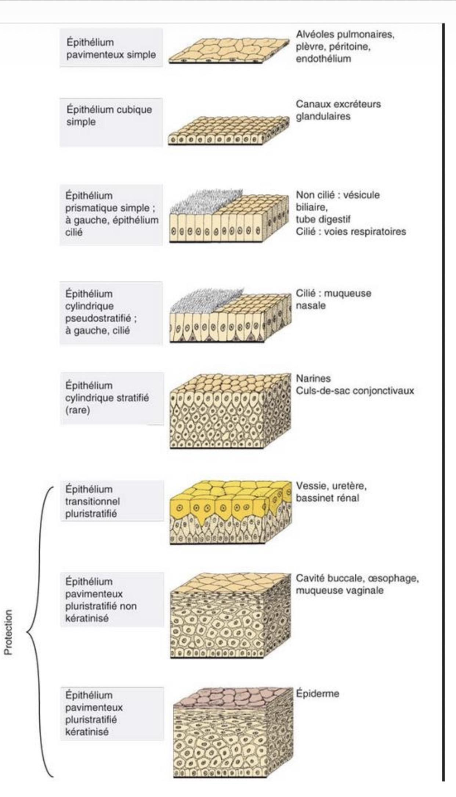
Question 1. Concernant l'épithélium pseudostratifié cylindrique de l'épididyme, quelle affirmation est EXACTE ?
Question 2. Quelle est la principale différence structurale entre les stéréocils et les cils vrais ?
Question 3. La barrière hémato-testiculaire est assurée par :
Question 4. Quel épithélium tapisse le rete testis ?
Question 5. Un patient présente une infertilité masculine associée à des bronchectasies et un situs inversus (syndrome de Kartagener). Le mécanisme principal de l'infertilité est :
Les testicules sont les gonades masculines. Ils ont une double fonction fondamentale : une fonction exocrine (production de spermatozoïdes = spermatogenèse) et une fonction endocrine (sécrétion de testostérone par les cellules de Leydig). Pour un débutant, il est crucial de bien comprendre que ces deux fonctions sont assurées par des structures histologiquement distinctes, qui coexistent au sein du même organe et qui sont sous contrôle hormonal étroit de l'axe hypothalamo-hypophysaire.
Macroscopiquement, chaque testicule mesure environ 4–5 cm de long, 2,5–3 cm de large et pèse environ 20–30 grammes. Il est situé dans les bourses (scrotalisation), à une température inférieure de 2–4°C à la température corporelle centrale, ce qui est absolument indispensable à une spermatogenèse normale. La cryptorchidie (testicule non descendu) entraîne une infertilité précisément parce que la température abdominale (37°C) est trop élevée pour la production de spermatozoïdes normaux.
L'albuginée émet vers l'intérieur du testicule des septa (cloisons) fibreux qui divisent l'organe en 200 à 300 lobules testiculaires. Ces septa convergent vers le médiastinum testis, une épaississement de l'albuginée dans la région postérieure du testicule. Le médiastinum est traversé par les vaisseaux sanguins, les vaisseaux lymphatiques et les canaux excréteurs (tubes droits → rete testis).
Cliniquement, l'albuginée limite l'expansion du testicule en cas d'orchite (inflammation) ou de tumeur, ce qui se traduit par des douleurs vives. En cas de torsion testiculaire (urgence chirurgicale), les vaisseaux traversant le médiastinum sont comprimés, entraînant une ischémie.
Chaque lobule contient 1 à 4 tubes séminifères. Un tube séminifère est un long tube enroulé sur lui-même (longueur totale : environ 70 cm par tube !) tapissé d'un épithélium stratifié très spécialisé appelé épithélium séminal ou épithélium germinatif. C'est dans cet épithélium que se déroule toute la spermatogenèse.
Les tubes séminifères aboutissent dans leur partie terminale aux tubes droits, puis au rete testis (réseau anastomotique dans le médiastinum), puis aux canaux efférents (10 à 15) qui pénètrent dans la tête de l'épididyme.
Les fonctions des cellules de Sertoli sont multiples et essentielles :
Entre les tubes séminifères se trouve le tissu interstitiel (ou interstitium), constitué de tissu conjonctif lâche, de vaisseaux sanguins, de vaisseaux lymphatiques, de macrophages résidents et surtout des cellules de Leydig.
La cellule de Leydig est la principale source de testostérone chez l'homme (95% de la testostérone circulante). Elle répond à la LH hypophysaire (via récepteur LH/hCG couplé aux protéines G). La voie de biosynthèse : cholestérol → prégnénolone → DHEA → androstènedione → testostérone (voie des Δ5 stéroïdes). Les enzymes clés (StAR, P450scc, 3β-HSD, 17β-HSD) sont localisées dans les mitochondries et le REL.
| Niveau | Hormone | Action |
|---|---|---|
| Hypothalamus | GnRH (pulsatile) | Stimule hypophyse |
| Antéhypophyse | LH | Stimule cellules de Leydig |
| Antéhypophyse | FSH | Stimule cellules de Sertoli (ABP, inhibine) |
| Testicule | Testostérone | Rétrocontrôle négatif sur LH et GnRH |
| Testicule | Inhibine B | Rétrocontrôle négatif spécifique sur FSH |
L'épithélium séminal est unique en son genre : ce n'est pas un épithélium classifiable selon la nomenclature habituelle. Il associe des cellules de soutien (Sertoli) et des cellules en cours de différenciation (lignée germinale). On distingue, de la basale vers la lumière :
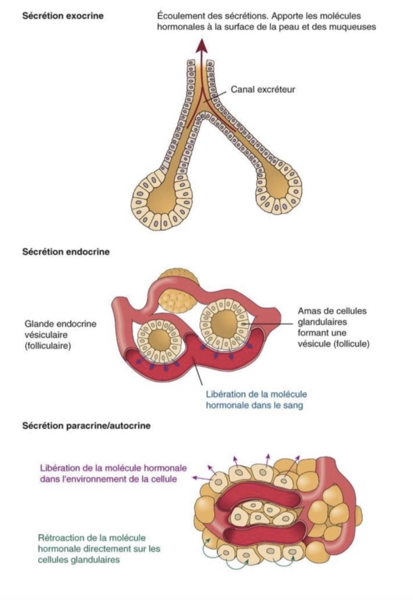
Image histologique — pdf1_p4
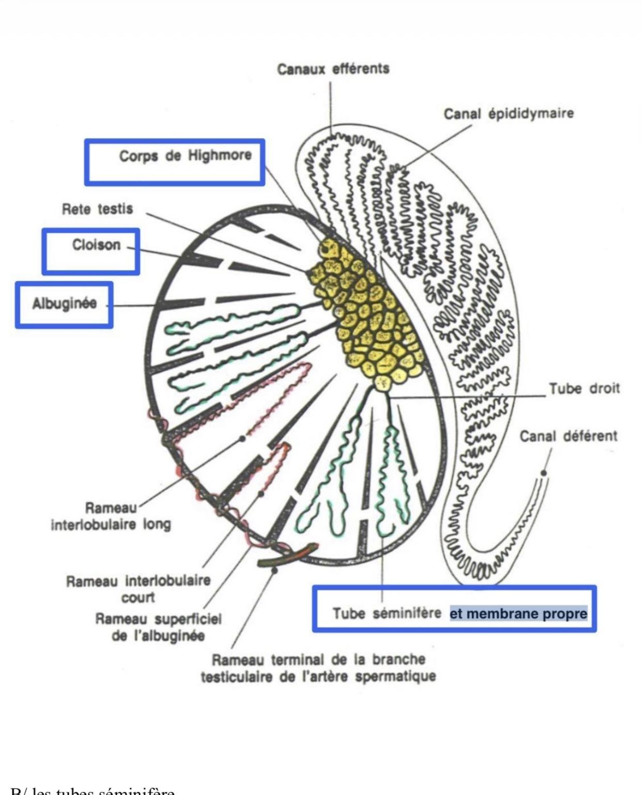
Image histologique — pdf1_p5
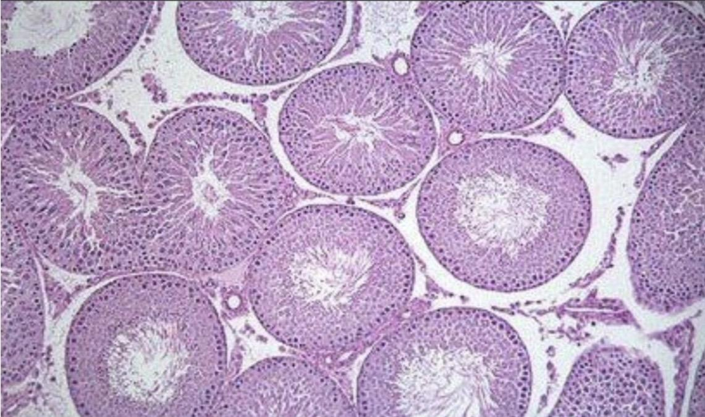
Image histologique — pdf1_p5
Question 1. Quel est le rôle principal des cellules de Leydig ?
Question 2. La cryptorchidie bilatérale non traitée entraîne préférentiellement :
Question 3. Parmi les affirmations suivantes sur les cellules de Sertoli, laquelle est FAUSSE ?
Question 4. L'hormone inhibine B sécrétée par les cellules de Sertoli exerce un rétrocontrôle négatif spécifique sur :
Question 5. En histologie, comment reconnaître les cellules de Leydig dans l'interstitium testiculaire ?
La spermatogenèse est le processus de production des spermatozoïdes (gamètes masculins haploïdes) à partir des spermatogonies (cellules germinales souches diploïdes). Ce processus se déroule dans les tubes séminifères du testicule et dure environ 74 jours chez l'homme. Il commence à la puberté (sous influence de la LH et FSH) et se poursuit tout au long de la vie, bien qu'avec une efficacité décroissante avec l'âge.
Chaque jour, un homme adulte en bonne santé produit environ 100 à 200 millions de spermatozoïdes. La spermatogenèse est un processus à la fois continu (ondes successives) et ordonné spatialement (de la basale vers la lumière).
On distingue classiquement :
Les spermatogonies B se divisent par mitose et donnent des spermatocytes I qui entrent en méiose. La différenciation de Ap en B est irréversible : une fois engagé en méiose, pas de retour en arrière.
La méiose I est dite "réductionnelle" car elle sépare les chromosomes homologues : à partir d'une cellule 2n (46 chromosomes, 92 chromatides après réplication), on obtient deux cellules n (23 chromosomes, 46 chromatides). C'est lors de la prophase I (stade pachytène) qu'ont lieu les crossing-over (enjambements) qui brassent le matériel génétique.
La spermiogenèse transforme la spermatide ronde (petite cellule sphérique, 8–10 µm, noyau sphérique, cytoplasme abondant) en spermatozoïde (cellule hautement différenciée de 60–70 µm de long, tête aplatie, pièce intermédiaire, flagelle) en 3 semaines environ.
Les étapes de la spermiogenèse :
| Région | Structure | Fonction |
|---|---|---|
| Tête | Noyau (chromatine condensée) + acrosome | Matériel génétique + enzymes lytiques pour fécondation |
| Pièce de connexion | Centriole proximal + colonnes segmentées | Liaison tête-flagelle |
| Pièce intermédiaire | Axonème 9+2 + 9 fibres denses + gaine mitochondriale | Production d'ATP (mitochondries) → motilité |
| Pièce principale | Axonème 9+2 + 9 fibres denses + gaine fibreuse | Propagation de la force propulsive |
| Pièce terminale | Axonème seul (9+2) | Fin du flagelle |
La tête du spermatozoïde humain est ovoïde aplatie, mesurant 4–5 µm de long, 2,5–3 µm de large. L'acrosome couvre les 2/3 antérieurs. Le flagelle mesure 55–60 µm. Une anomalie de la morphologie (tératozoospermie) ou de la motilité (asthénozoospermie) retentit directement sur la fertilité.
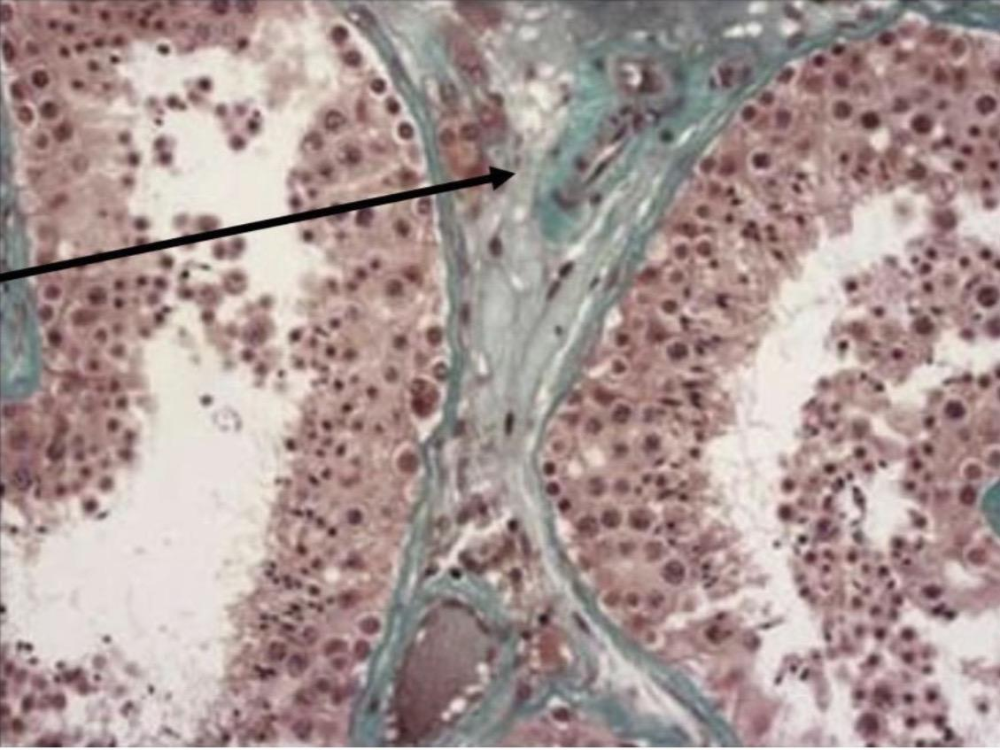
Image histologique — pdf1_p6
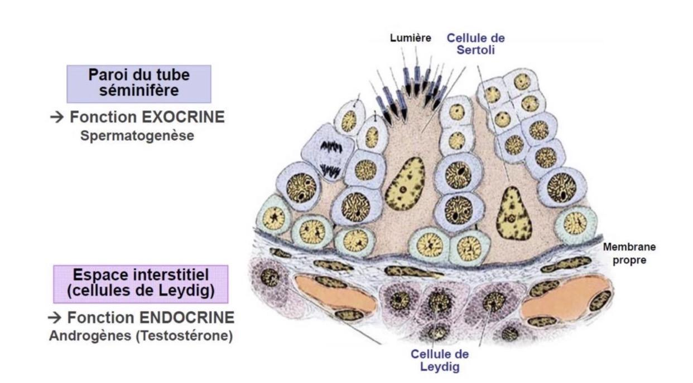
Image histologique — pdf1_p6
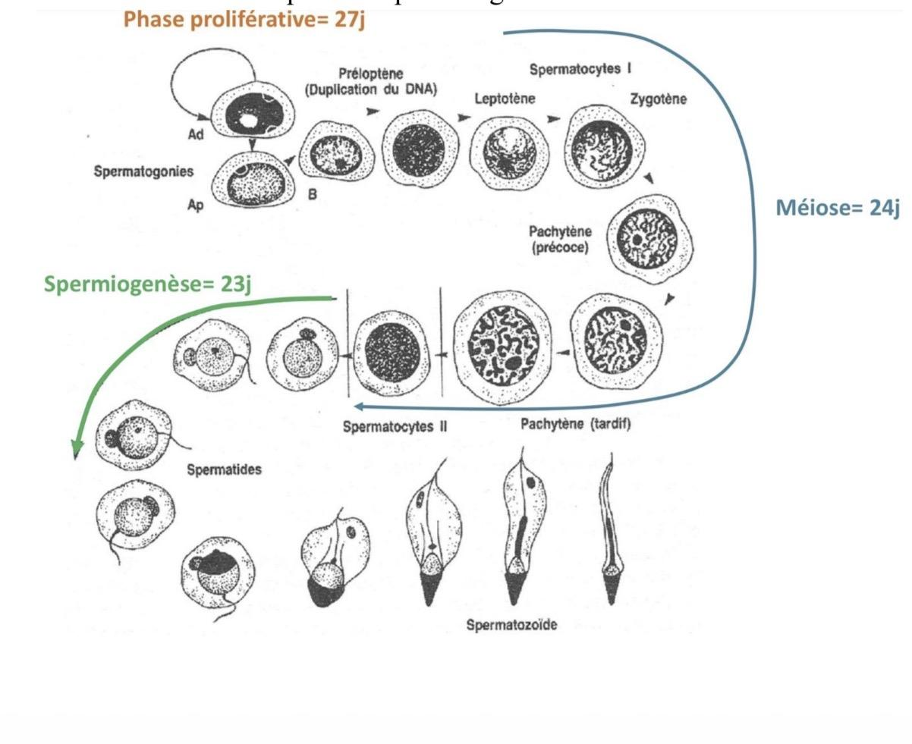
Image histologique — pdf1_p7
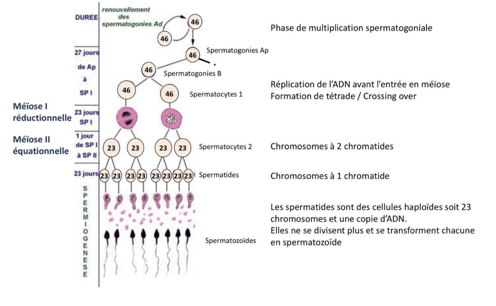
Image histologique — pdf1_p7
La superposition des cycles décalés dans le temps et dans l'espace (vague spermatogénétique le long du tube) garantit une production spermatique continue. Ainsi, même si chaque tube ne produit des spermatozoïdes que de façon cyclique, l'ensemble du testicule en produit en permanence.
Question 1. Quelle est la durée approximative de la prophase I de la méiose chez l'homme ?
Question 2. Lors de la spermiogenèse, quel organite est à l'origine de la formation de l'acrosome ?
Question 3. La tératozoospermie isolée est définie selon les critères OMS 2021 par :
Question 4. Concernant la spermiogenèse, laquelle des affirmations suivantes est correcte ?
Question 5. Un homme de 32 ans consulte pour infertilité. Son spermogramme montre : 18 M/mL, 20% de formes progressives, 2% de formes typiques. Comment qualifier ce spermogramme ?
Après leur production dans les tubes séminifères, les spermatozoïdes doivent parcourir un long trajet avant d'être éjaculés. Comprendre ce trajet est fondamental car chaque segment a une fonction différente, une histologie différente, et peut être le siège de pathologies spécifiques. Voici l'itinéraire complet :
Chaque transition entre ces structures est visible histologiquement par un changement brutal d'épithélium. Apprendre à identifier ces transitions est un exercice classique des concours.
Histologiquement, le rete testis présente des lumières très irrégulières, souvent en aspect de "lagunes", délimitées par un épithélium cubique simple bas. Contrairement aux canaux efférents ou à l'épididyme, il n'y a pas de stéréocils ni de cils vrais dans le rete testis. Le tissu conjonctif environnant est dense (c'est le tissu du médiastinum).
Les cellules du rete testis ont une activité limitée de réabsorption (elles réabsorbent un peu du fluide séminal). Il n'y a pas de barrière épithéliale sécrétoire significative à ce niveau. Ce segment sert principalement de voie de passage entre les tubes séminifères et les canaux efférents.
Les canaux efférents (10 à 15 canaux) relient le rete testis à la tête de l'épididyme. Ils font partie des éléments du cône efférent, enroulés dans la tête de l'épididyme. Leur histologie est absolument caractéristique et facilement reconnaissable en coupe :
Voici les deux types cellulaires :
Cette réabsorption de 90% du fluide dans les canaux efférents est essentielle. Si elle est défaillante (par exemple en cas de mutation des récepteurs aux œstrogènes ERα, qui régulent cette réabsorption), les spermatozoïdes sont "noyés" dans un excès de liquide, la pression dans l'épididyme augmente, et une infertilité en résulte.
À faible grossissement, les canaux efférents se reconnaissent immédiatement à leur lumière en étoile ou festonnée, résultant de l'alternance de cellules hautes et basses. C'est un signe histologique pathognomonique très utilisé aux QCM. En comparaison :
La musculeuse des canaux efférents est fine, composée d'une seule couche de cellules musculaires lisses circulaires. Elle est bien moins développée que celle de l'épididyme ou surtout du canal déférent. Ses contractions participent au transit des spermatozoïdes, mais le rôle principal est celui des cils.
| Région | Longueur | Fonction principale | Durée transit |
|---|---|---|---|
| Tête (caput) | Canaux efférents + début épididyme | Réabsorption fluide, début maturation | 1–2 j |
| Corps (corpus) | Canal épididymaire moyen | Maturation (mobilité, capacité fécondante) | 4–5 j |
| Queue (cauda) | Réservoir spermatique | Stockage des spermatozoïdes matures | Variable (jours/semaines) |
Le transit spermatique dans l'épididyme dure au total 10 à 15 jours. Si l'homme n'éjacule pas, les spermatozoïdes sont stockés dans la cauda épididymaire, puis dégradés et réabsorbés. En cas d'éjaculation, les spermatozoïdes stockés dans la queue sont expulsés vers le canal déférent sous l'effet des contractions de la musculeuse.
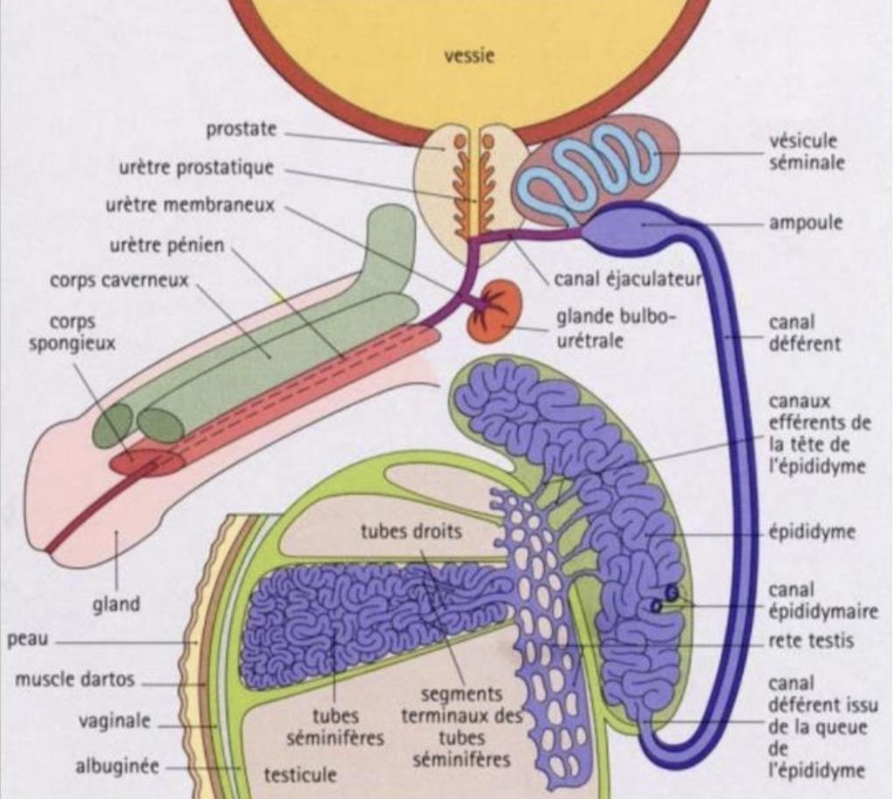
Image histologique — pdf1_p8
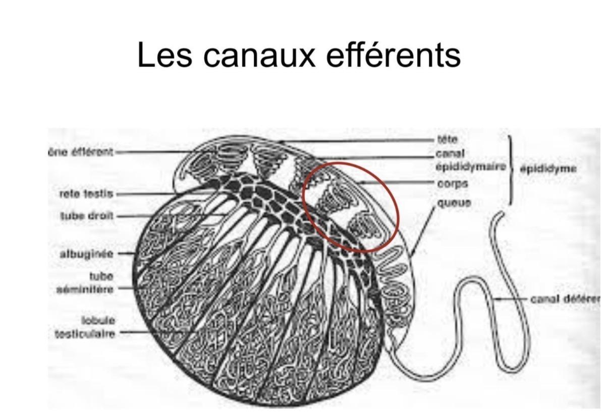
Image histologique — pdf1_p9
Question 1. Quel aspect histologique est caractéristique des canaux efférents et permet de les identifier facilement à faible grossissement ?
Question 2. Quel pourcentage du fluide séminal testiculaire est réabsorbé au niveau des canaux efférents ?
Question 3. Le rete testis est tapissé par :
Question 4. La durée totale du transit spermatique dans l'épididyme est d'environ :
Question 5. Un homme de 28 ans présente une azoospermie obstructive. Son bilan hormonal montre FSH = 3 UI/L (normale), LH = 4 UI/L (normale), testostérone = 18 nmol/L (normale). Quelle est l'hypothèse diagnostique principale ?
L'épithélium du canal épididymaire est l'un des plus caractéristiques de l'organisme et est un incontournable des concours. Il s'agit d'un épithélium pseudostratifié cylindrique à stéréocils. Rappelons que "pseudostratifié" signifie que toutes les cellules sont en contact avec la membrane basale, mais que leurs noyaux sont à des hauteurs différentes, ce qui crée une fausse impression de stratification.
Ces cellules principales sont les plus nombreuses (60–70% de l'épithélium). Elles sont hautement polarisées : leur pôle apical (stéréocils, endocytose) et leur pôle basal (nombreux lysosomes, sécrétion exocytaire basale) sont fonctionnellement distincts. Elles expriment de nombreux transporteurs ioniques (aquaporines, canaux chlore, échangeurs Na/H) et enzymes sécrétoires.
Les cellules basales représentent 20–30% de l'épithélium. Leur cytoplasme contient des filaments intermédiaires (cytokératine). Elles sont parfois appelées "cellules pyramidales" en raison de leur forme.
Dans certaines régions de l'épididyme (notamment la tête), on peut observer des cellules apicales, qui sont des cellules tubulaires à bord apical avec de nombreuses mitochondries, jouant un rôle dans l'acidification de la lumière (pompes H+-ATPase = pompes à protons vacuolaires). L'acidification de la lumière épididymaire est essentielle : elle maintient les spermatozoïdes en état de dormance motrice (pour préserver leur énergie) et contribue à leur maturation.
L'un des aspects les plus importants à retenir est le gradient de développement de la musculeuse le long de l'épididyme. Ce gradient traduit l'évolution fonctionnelle de cet organe : la musculeuse devient progressivement plus épaisse et plus active au fur et à mesure qu'on se dirige vers la queue, car les contractions sont de plus en plus nécessaires pour expulser les spermatozoïdes vers le canal déférent.
| Région épididyme | Musculeuse | Organisation |
|---|---|---|
| Tête (caput) | Fine (1 couche) | 1 couche de cellules musculaires lisses circulaires |
| Corps (corpus) | Intermédiaire (2 couches) | Couche circulaire interne + couche longitudinale externe |
| Queue (cauda) | Épaisse (3 couches) | Longitudinale interne + circulaire moyenne + longitudinale externe |
À titre de comparaison, la musculeuse du canal déférent est encore bien plus épaisse (environ 1 cm sur 3 mm de diamètre total), avec trois couches distinctes très développées. C'est cette épaisseur qui rend le canal déférent palpable en scrotal et facilement identifiable lors d'une vasectomie.
L'épithélium épididymaire crée et maintient un microenvironnement très particulier dans la lumière du canal, différent selon les régions. Ce microenvironnement est indispensable à la maturation des spermatozoïdes :
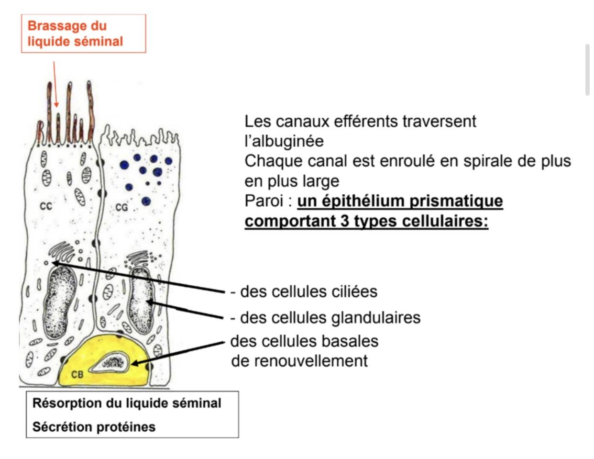
Image histologique — pdf1_p10
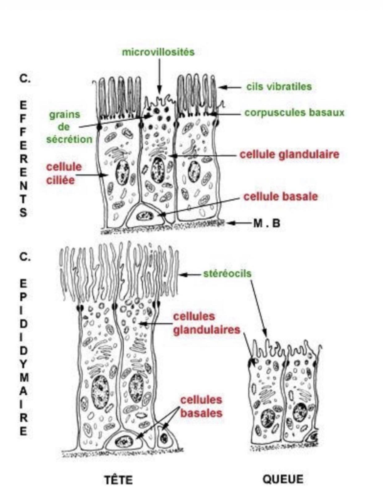
Image histologique — pdf1_p11
Question 1. Quelle substance, sécrétée par les cellules de l'épididyme, est dosée dans le spermogramme comme marqueur de la fonction épididymaire ?
Question 2. Dans l'épididyme, quel est le rôle des cellules "halo" ?
Question 3. La musculeuse de la queue de l'épididyme est constituée de :
Question 4. Pourquoi le pH acide (6,5–6,8) de la lumière épididymaire est-il physiologiquement important ?
Question 5. Un bilan séminal montre : azoospermie + FSH normale + testostérone normale + alpha-glucosidase effondrée. Quelle est l'interprétation la plus probable ?
Les spermatozoïdes quittent le testicule incapables de féconder un ovocyte. Ils sont immobiles (ou seulement légèrement mobiles, de façon non directionnelle) et ne peuvent pas interagir avec la zone pellucide. Ce n'est que pendant leur transit dans l'épididyme, sur 10 à 15 jours, qu'ils acquièrent les capacités nécessaires à la fécondation. Ce processus est appelé maturation épididymaire.
Plusieurs changements morphologiques sont observables pendant le transit épididymaire :
La membrane plasmique du spermatozoïde subit des modifications majeures pendant le transit épididymaire. Ces modifications sont essentielles car elles permettront les interactions ultérieures avec la zone pellucide et l'ovocyte :
C'est l'acquisition de la mobilité qui est le changement fonctionnel le plus spectaculaire et le plus cliniquement important :
Les mécanismes biochimiques de l'activation de la motilité incluent :
Cependant, la motilité "activée" (mouvement de fouet vigoureux, hyperactivation) ne se produit qu'après la capacitation dans les voies génitales féminines, pas dans l'épididyme.
La capacitation implique :
La réaction acrosomique est déclenchée par le contact avec la zone pellucide (via liaison ZP3-récepteur) : fusion des membranes externe de l'acrosome et plasmique → libération des enzymes acrosomiques (hyaluronidase, acrosine, etc.) → perforation de la zone pellucide → pénétration de l'ovocyte.
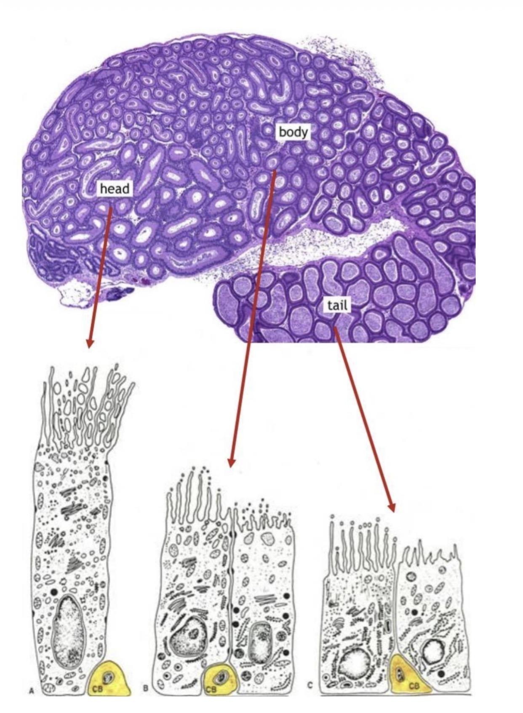
Image histologique — pdf1_p12
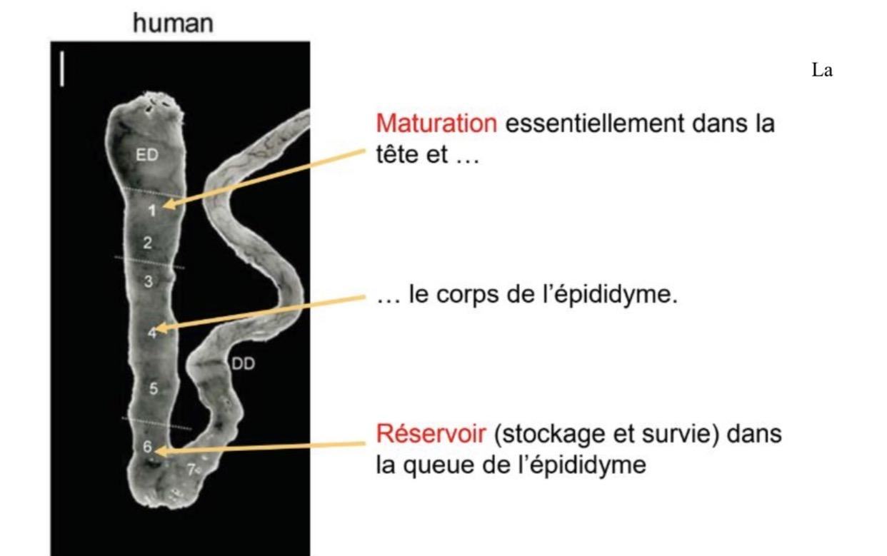
Image histologique — pdf1_p13
Question 1. La "capacitation" des spermatozoïdes se déroule dans :
Question 2. Quelle modification de la membrane plasmique du spermatozoïde est un signe de maturation épididymaire ?
Question 3. Une gouttelette cytoplasmique résiduelle localisée sur la pièce PROXIMALE (jonction tête/pièce intermédiaire) d'un nombre élevé de spermatozoïdes signifie :
Question 4. Quel est le mécanisme principal par lequel les spermatozoïdes acquièrent la mobilité progressive dans l'épididyme ?
Question 5. La réaction acrosomique est déclenchée par :
Nous avons vu séparément chaque étape du développement spermatique. Cette diapositive propose une vision synthétique et intégrée de l'acquisition progressive des capacités fécondantes, depuis la fin de la spermiogenèse jusqu'à la fécondation. C'est une vision systémique indispensable pour comprendre pourquoi chaque étape est nécessaire et ce qui se passe quand l'une d'elles dysfonctionne.
Pour féconder un ovocyte, un spermatozoïde doit posséder et exercer plusieurs capacités simultanément :
| Capacité | Lieu d'acquisition | Mécanisme clé |
|---|---|---|
| Mobilité progressive | Épididyme (corps) | Phosphorylation protéines flagellaires / PKA |
| Compaction chromatine (finale) | Épididyme (caput) | Ponts disulfures inter-protamines |
| Protéines de surface | Épididyme (tout le trajet) | Epididymosomes (exosomes) |
| Hyperactivation | Voies féminines (capacitation) | ↑Ca²⁺, ↑AMPc, déflux cholestérol |
| Réaction acrosomique | Zona pellucida | ZP3 → ↑Ca²⁺ → exocytose |
| Fusion sperme-ovocyte | Oolemme (après RA) | IZUMO1 - JUNO (récepteur) |
La compréhension de l'histologie épididymaire n'est pas une curiosité académique : elle a des implications cliniques directes.
Exemple 1 — AMP (Assistance Médicale à la Procréation) : quand on prélève des spermatozoïdes directement dans l'épididyme (MESA = Microsurgical Epididymal Sperm Aspiration), les spermatozoïdes de la tête de l'épididyme ont une motilité moindre et un taux de fécondation inférieur à ceux prélevés dans la queue. Cela reflète le gradient de maturation.
Exemple 2 — Fièvre et spermogramme : un épisode fébrile (> 38,5°C) perturbe la spermatogenèse et la maturation épididymaire. Les effets se voient sur le spermogramme environ 74 jours plus tard (durée d'un cycle complet). Le patient doit être informé de ce délai lors de l'interprétation du spermogramme.
Exemple 3 — Antioxydants : la gaine mitochondriale de la pièce intermédiaire est particulièrement sensible au stress oxydatif. Les mitochondries en excès de production de ROS (espèces réactives de l'oxygène) peuvent endommager l'ADN du flagelle et de la tête. C'est pourquoi des antioxydants (vitamine C, E, coenzyme Q10, sélénium) sont parfois prescrits dans l'infertilité masculine idiopathique, même si les preuves restent limitées.
Les causes de fragmentation de l'ADN spermatique sont multiples : stress oxydatif (tabac, chaleur, pollution), anomalie de la spermiogenèse (apoptose incomplète), anomalie de la compaction (remplacement insuffisant des histones par les protamines), MAGI (male accessory gland infections), varicocèle.
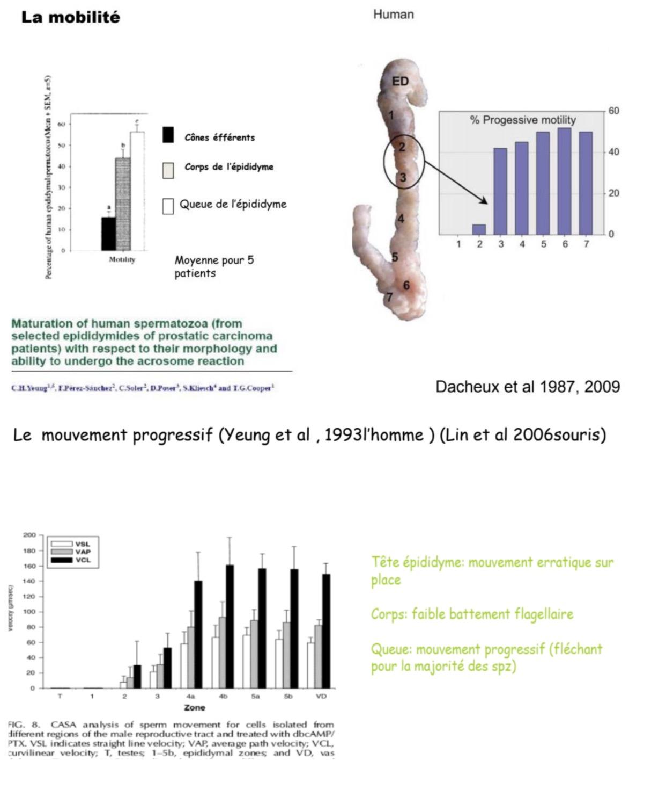
Image histologique — pdf1_p14
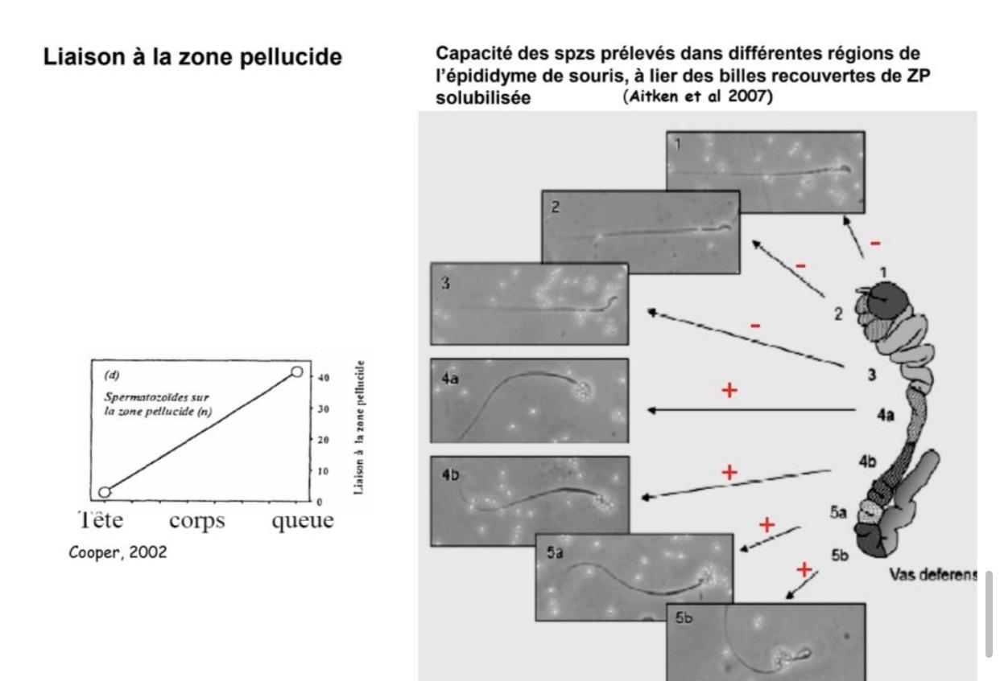
Image histologique — pdf1_p14
Question 1. Quelle protéine du spermatozoïde se lie à JUNO (récepteur ovocytaire) pour permettre la fusion sperme-ovocyte ?
Question 2. Le DNA Fragmentation Index (DFI) est interprété comme associé à une fertilité diminuée quand il dépasse :
Question 3. Dans la fécondation normale, le blocage de la polyspermie (pénétration de plusieurs spermatozoïdes) est principalement assuré par :
Question 4. Un patient consultant pour infertilité a un spermogramme normal (concentration, mobilité, morphologie normaux) mais a eu 3 fausses couches au 1er trimestre avec sa partenaire (bilan féminin normal). Quel examen complémentaire spermatique proposer ?
Question 5. La réaction acrosomique libère des enzymes permettant la pénétration de la zone pellucide. Parmi ces enzymes, on trouve :
Le canal déférent (ou vas deferens) est un tube musculaire épais reliant l'épididyme (sa queue) au canal éjaculateur. Il mesure environ 45 cm de long pour un diamètre total d'environ 3 mm, dont plus de 1 mm de lumière et environ 1 cm de musculeuse. C'est l'organe dont la paroi musculaire est la plus épaisse par rapport à la taille de la lumière dans tout l'organisme, ce qui reflète sa puissante fonction de transport actif.
Son trajet : commence dans le scrotum (palpable entre les doigts dans le cordon spermatique, de consistance ferme "cordée"), remonte dans le canal inguinal avec le paquet vasculo-nerveux (cordon spermatique), puis descend dans le bassin en arrière de la vessie vers la prostate où il rejoint le canal excréteur de la vésicule séminale pour former le canal éjaculateur.
En coupe histologique transversale, le canal déférent présente de l'intérieur vers l'extérieur :
La muqueuse est constituée d'un épithélium pseudostratifié cylindrique à stéréocils et d'un chorion (lamina propria) de tissu conjonctif lâche riche en fibres élastiques. L'épithélium ressemble à celui de l'épididyme mais les stéréocils sont plus courts. La muqueuse forme des plis longitudinaux peu importants (lumière en étoile à faible grossissement), mais bien moins festonnée que l'épididyme.
C'est cette musculeuse exceptionnellement développée qui permet au canal déférent de se contracter de façon très puissante et rapide lors de l'éjaculation, expulsant les spermatozoïdes de la queue de l'épididyme vers le canal éjaculateur en quelques secondes. La contraction est déclenchée par le système nerveux orthosympathique (noradrénaline → récepteurs α1-adrénergiques).
Cliniquement, on peut palper le canal déférent dans le scrotum comme un "cordon dur" séparé de l'épididyme. Cette palpabilité est essentielle pour :
L'adventice est une couche externe de tissu conjonctif lâche, contenant les vaisseaux nourriciers (artère déférentielle) et les nerfs (fibres sympathiques et parasympathiques).
Le canal déférent est sous contrôle du système nerveux autonome :
L'ampulla du canal déférent (partie dilatée juste avant sa jonction avec le canal excréteur de la vésicule séminale) joue un rôle de réservoir transitoire. Son épithélium est plus plissé et sa musculeuse légèrement moins développée que le reste du canal déférent.
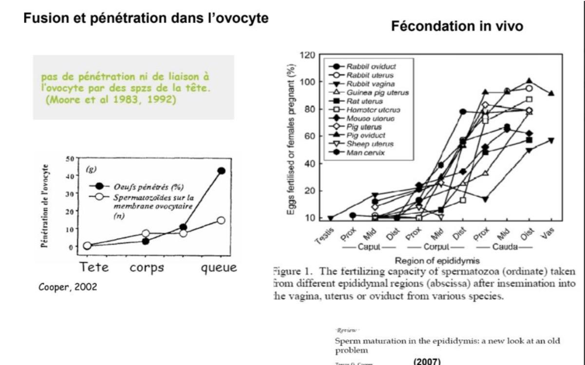
Image histologique — pdf1_p15
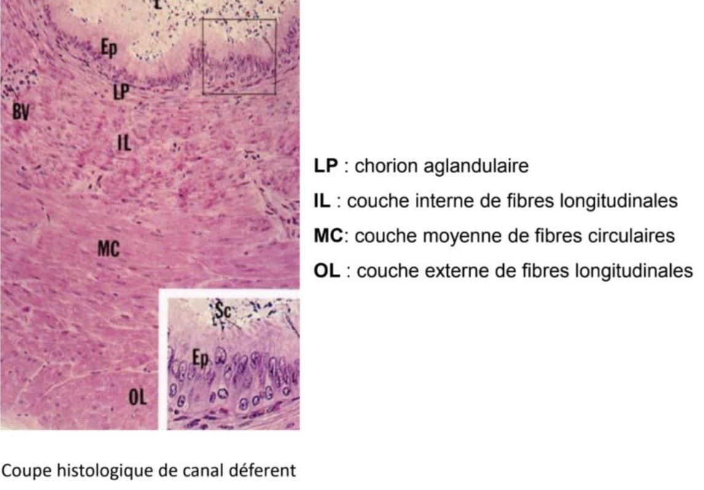
Image histologique — pdf1_p16
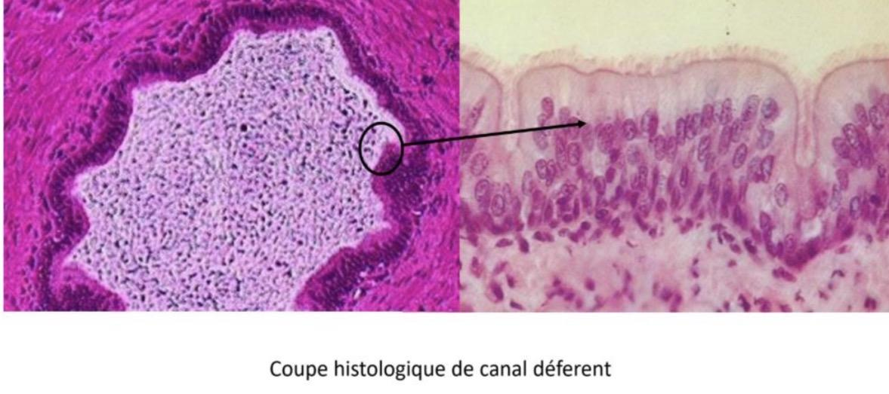
Image histologique — pdf1_p16
Question 1. Quelle est la composition de la musculeuse du canal déférent ?
Question 2. Lors d'une vasectomie, quel est l'effet attendu sur le volume de l'éjaculat ?
Question 3. Quel système nerveux contrôle la phase d'émission de l'éjaculation (contraction du canal déférent) ?
Question 4. L'absence congénitale bilatérale des canaux déférents (CBAVD) est liée à une mutation de quel gène ?
Question 5. Un homme de 35 ans présente une azoospermie. L'échographie scrotale ne retrouve pas les canaux déférents bilatéralement. Le spermogramme montre l'absence de fructose et une alpha-glucosidase effondrée. Quelle est la cause la plus probable ?
Histologiquement, la paroi du canal éjaculateur est mince : pas de musculeuse propre (contrairement au canal déférent !). Il est tapissé d'un épithélium cylindrique simple ou pseudostratifié à microvillosités, sans stéréocils. La paroi du canal éjaculateur est entourée directement par le tissu prostatique, et c'est la musculeuse de la prostate qui participe à son propulsion lors de l'éjaculation.
Les glandes annexes masculines sont des structures sécrétoires qui contribuent à la composition du plasma séminal (la phase liquide du sperme, hors spermatozoïdes). Le plasma séminal représente 95–98% du volume de l'éjaculat. Comprendre les contributions de chaque glande est important pour l'interprétation des marqueurs biochimiques du spermogramme.
Les trois glandes annexes principales sont :
| Glande | % volume | Marqueurs biochimiques | pH contribution |
|---|---|---|---|
| Vésicules séminales | 60–70% | Fructose +++, prostaglandines, séméno-protéines | Alcalin (7,2–7,4) |
| Prostate | 25–30% | PSA, zinc, acide citrique, phosphatase acide | Légèrement acide |
| Épididyme | 5–10% | Alpha-glucosidase neutre, L-carnitine | Acide |
| Glandes de Cowper | < 5% | Mucus (glycoprotéines), sans marqueur spécifique | Alcalin |
L'éjaculation n'est pas un phénomène uniforme : les différentes fractions sont émises de façon séquentielle :
Question 1. Le canal éjaculateur résulte de la jonction de :
Question 2. Le fructose dans le plasma séminal est produit par :
Question 3. Le PSA (Prostate Specific Antigen) joue un rôle physiologique dans le sperme. Ce rôle est :
Question 4. Quel marqueur biochimique spermatique est produit par la prostate ?
Question 5. Un spermogramme montre : volume 0,5 mL, pH 6,5 (acide), azoospermie, fructose absent. Quelle est l'interprétation la plus probable ?
Les vésicules séminales (ou glandes vésiculaires) sont deux structures glandulaires situées en arrière de la vessie, au-dessus de la prostate, de chaque côté de l'ampoule déférentielle. Contrairement à ce que leur nom indique, elles ne stockent PAS de spermatozoïdes : ce sont des glandes sécrétoires dont le canal excréteur rejoint l'ampoule du canal déférent pour former le canal éjaculateur.
Macroscopiquement, chaque vésicule séminale mesure 5–7 cm de long mais est très repliée sur elle-même, avec une lumière globale de 7–10 cm². Elle est facilement visualisable en IRM ou en échographie endorectale (si dilatée > 15 mm → signe d'obstruction du canal éjaculateur).
La caractéristique histologique la plus frappante des vésicules séminales est l'aspect très complexe et ramifié de leur muqueuse. En coupe, on observe :
Cette organisation très plissée augmente considérablement la surface sécrétoire. En pratique, une coupe de vésicule séminale peut ressembler à une coupe de thyroïde (alvéoles remplis de colloïde sécrétoire) ou à une coupe d'endomètre prolifératif. Le pathologiste doit savoir la reconnaître pour ne pas la confondre avec d'autres structures pelviennes.
Les cellules épithéliales sont de deux types principaux :
L'activité sécrétoire est sous contrôle de la testostérone : en cas d'hypogonadisme sévère, les vésicules séminales s'atrophient et leur sécrétion diminue (fructose séminal bas dans les hypogonadismes profonds, à distinguer de l'obstruction des canaux éjaculateurs).
Les vésicules séminales contribuent à 60–70% du volume séminal total. Leurs sécrétions incluent :
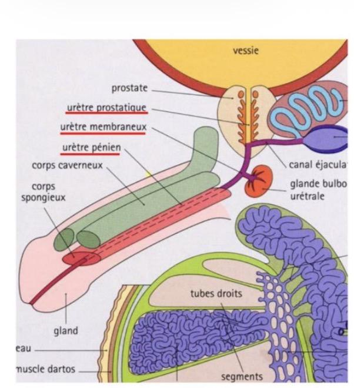
Image histologique — pdf1_p18
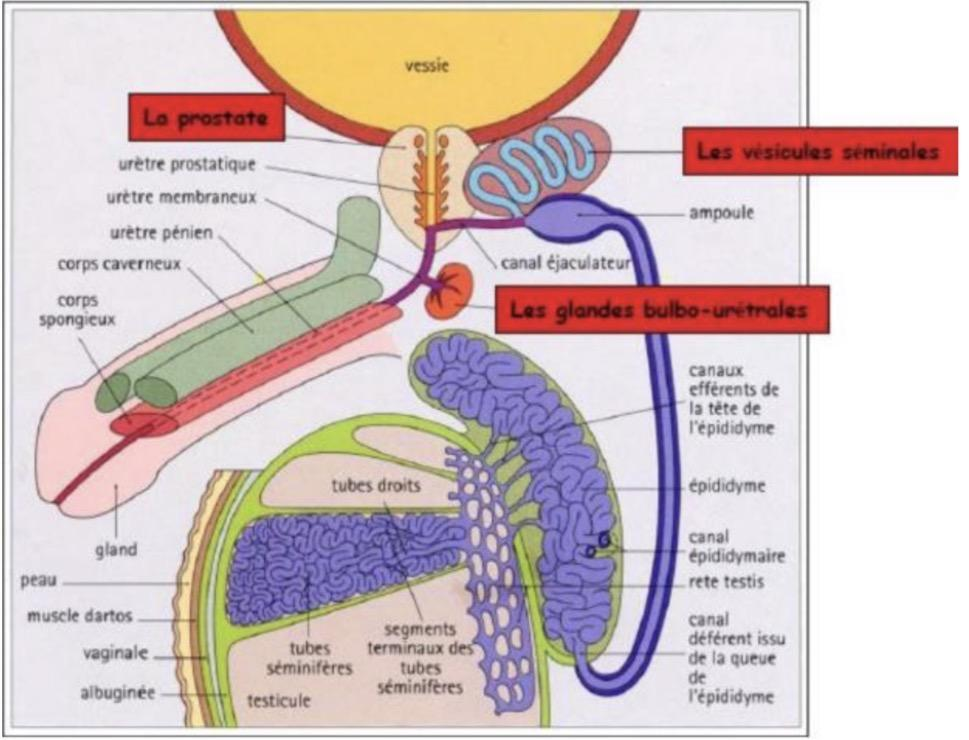
Image histologique — pdf1_p18
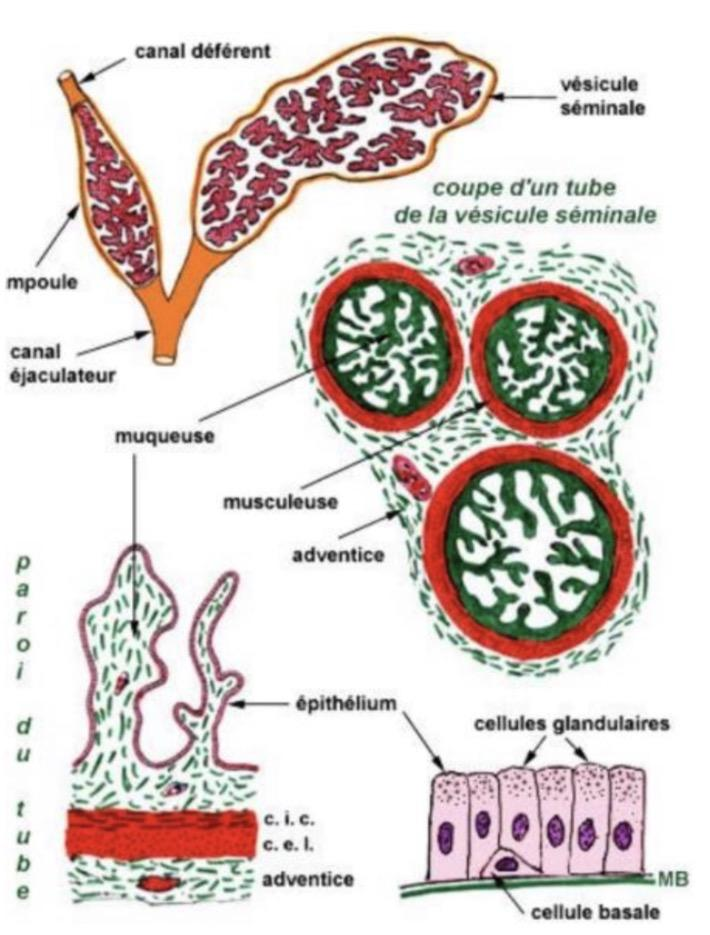
Image histologique — pdf1_p19
Question 1. Quelle est la caractéristique histologique la plus évocatrice des vésicules séminales en coupe ?
Question 2. Le fructose séminal est produit par les vésicules séminales sous dépendance de :
Question 3. La "non-liquéfaction" du sperme (> 60 min après l'éjaculation) est due à :
Question 4. Quelle est l'origine du terme "prostaglandine" ?
Question 5. Un homme présente une hémospermie (sang dans l'éjaculat) depuis 3 semaines, sans autre symptôme. Il a 29 ans. Quelle est la prise en charge initiale la plus appropriée ?
La musculeuse des vésicules séminales est constituée de deux couches de cellules musculaires lisses :
Ces deux couches travaillent en coordination lors de l'éjaculation, sous contrôle orthosympathique, pour expulser la sécrétion vésiculaire dans le canal éjaculateur. En dehors de l'éjaculation, la vésicule séminale accumule et concentre ses sécrétions.
Le plasma séminal est la fraction liquide du sperme qui constitue le véhicule et l'environnement protecteur des spermatozoïdes. Sa composition est le résultat des sécrétions additionnées de toutes les glandes annexes. Il est utile de mémoriser les contributions relatives et les marqueurs biochimiques de chaque glande pour interpréter les bilans de fertilité.
| Composant | Source | Valeur normale | Signification si abaissé |
|---|---|---|---|
| Fructose | Vésicules séminales | > 13 µmol/éjaculat | Obstruction CE ou absence VS ou hypogonadisme sévère |
| PSA | Prostate | Variable (non standardisé dans sperme) | Prostatite chronique, obstruction |
| Zinc | Prostate | > 2,4 µmol/éjaculat | Pathologie prostatique |
| Alpha-glucosidase | Épididyme | > 20 mUI/éjaculat | Obstruction épididymaire ou en aval |
| L-carnitine totale | Épididyme | > 0,8 µmol/éjaculat | Obstruction ou dysfonction épididymaire |
| Acide citrique | Prostate | > 52 µmol/éjaculat | Hypoandrogénie ou pathologie prostatique |
Les vésicules séminales expriment des récepteurs aux androgènes (RA). La testostérone (après conversion en DHT par la 5α-réductase de type 2 localement) stimule :
En cas d'hypogonadisme profond ou de castration chirurgicale/chimique (traitement du cancer de prostate), les vésicules séminales s'atrophient en quelques semaines. Le volume séminal diminue de 60–70% (réduction majeure, correspondant à la perte des sécrétions vésiculaires). C'est ce qui explique la réduction draconienne du volume séminal sous traitement antiandrogène.
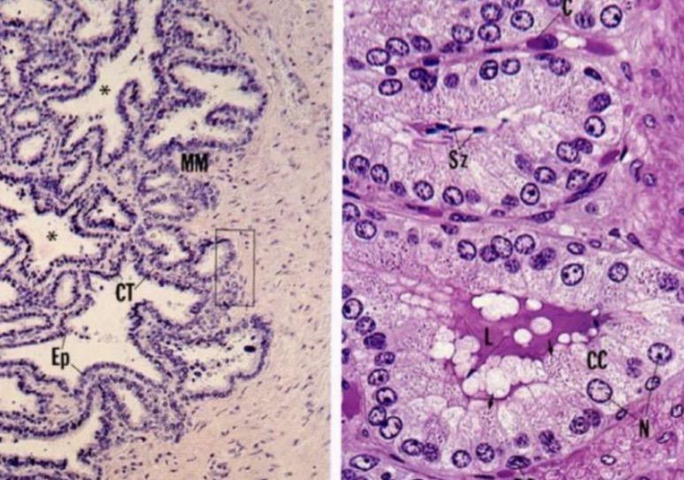
Image histologique — pdf1_p20
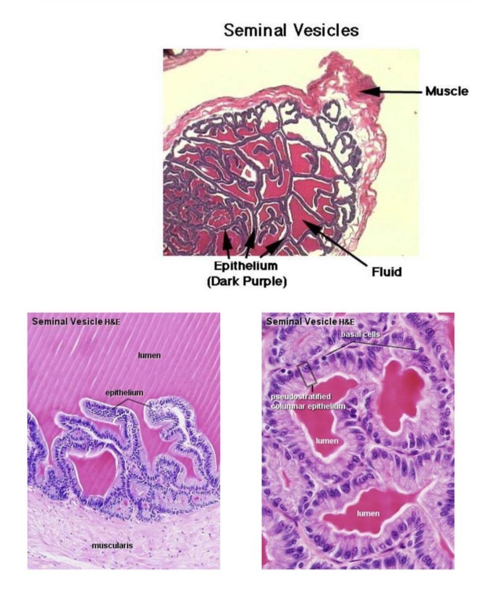
Image histologique — pdf1_p21
Question 1. La musculeuse des vésicules séminales est composée de :
Question 2. Un homme de 45 ans sous castration chimique (agoniste LHRH) pour cancer de prostate présente un volume séminal de 0,2 mL (normal > 1,4 mL). La principale cause est :
Question 3. L'acide citrique séminal est un marqueur de :
Question 4. Quelle est la valeur normale du fructose séminal selon les recommandations OMS ?
Question 5. Le spermogramme montre : volume 0,8 mL, pH 6,8, fructose absent, zinc normal, alpha-glucosidase normale, azoospermie. Quelle est l'interprétation ?
La prostate est une glande exocrine volumineuse (20–30 grammes chez l'adulte jeune) entourant l'urètre postérieur entre le col vésical et le sphincter urétral externe. C'est la glande annexe la plus grande de l'appareil génital masculin et la plus pathologique (HBP, prostatite, cancer = 3 entités fréquentes, incontournables en médecine).
Anatomie zonale de McNeal (à connaître absolument) :
La prostate est constituée de 50 à 70 glandes tubuloalvéolaires dont les canaux excréteurs se déversent dans l'urètre prostatique (les plus nombreux s'ouvrent dans les sinus prostatiques, de part et d'autre du veru montanum). Chaque glande tubuloalvéolaire possède :
L'identification immunohistochimique des cellules basales (p63+, CK5/14+) est ESSENTIELLE en anatomopathologie prostatique : leur absence signe le cancer de prostate (adénocarcinome prostatique = perte de la couche basale). C'est le critère formel d'adénocarcinome invasif.
Le stroma (tissu de soutien entre les glandes) est très abondant dans la prostate et constitue 30–40% de son poids. Il est composé de tissu conjonctif fibreux et de cellules musculaires lisses (stroma fibromusculaire). Ce stroma joue un rôle actif dans la régulation de la croissance épithéliale (interactions épithélio-stromales) et est le siège des modifications de l'HBP.
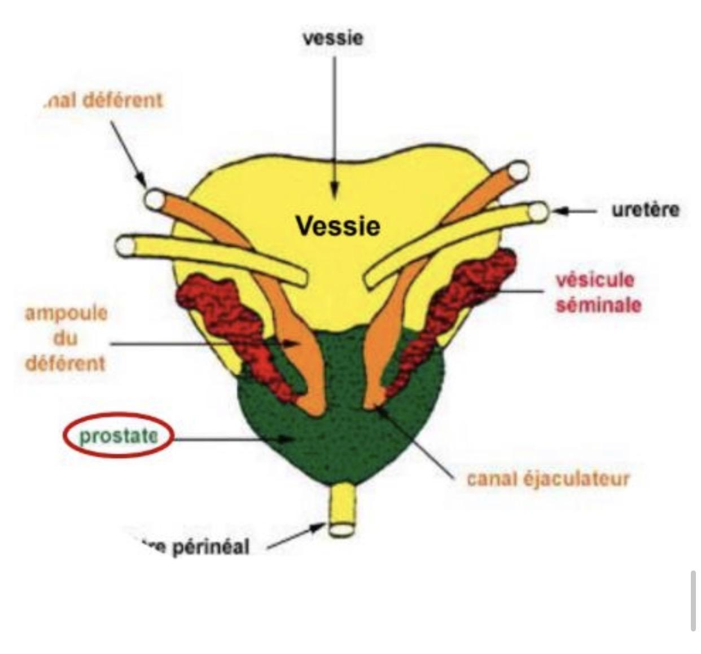
Image histologique — pdf1_p22
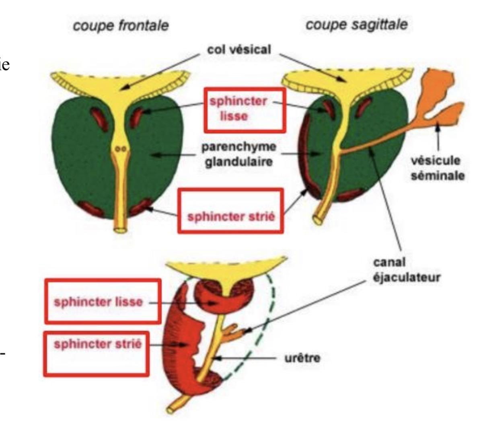
Image histologique — pdf1_p23
| Pathologie | Zone | Histologie clé |
|---|---|---|
| Cancer de prostate (adénocarcinome) | Périphérique (70–80%) | Perte couche basale (p63-), petites glandes compactes, noyaux proéminents |
| HBP (hyperplasie bénigne) | Transition | Hyperplasie épithélio-stromale, nodules, glandes kystiques |
| Prostatite aiguë bactérienne | Toutes zones | Infiltrat PNN intraglandulaire, œdème |
| PIN (intraépithélial néoplasie) | Périphérique | Cellules atypiques dans architecture conservée, couche basale intacte |
Question 1. Dans quelle zone de McNeal se développent préférentiellement les cancers de prostate ?
Question 2. En histologie, quel marqueur immunohistochimique permet de distinguer un adénocarcinome prostatique infiltrant d'une lésion bénigne ?
Question 3. Les corps amylacés dans les glandes prostatiques sont :
Question 4. La zone de transition de McNeal est le siège de :
Question 5. Un patient de 62 ans a un PSA total à 7 ng/mL. L'IRM prostatique montre un nodule PIRADS 5 dans la zone périphérique droite. Des biopsies prostatiques sont réalisées. L'anatomopathologie montre : glandes tubuloalvéolaires compactes, sans cellules basales (p63 négatif), score de Gleason 7 (3+4). Quel est le diagnostic ?
Les glandes prostatiques sécrètent leur contenu de deux façons distinctes, détectables en microscopie électronique et en microscopie optique :
En histologie, les cellules en sécrétion mérocrine ont un cytoplasme pâle, vacuolé (granules en cours de migration) et un aspect en "dôme" apical (accumulation de granules). Après sécrétion, la cellule se recharge en granules.
La sécrétion apocrine est moins fréquente que la mérocrine dans la prostate, mais elle contribue à la fraction lipidique des sécrétions prostatiques. Elle est histologiquement visible par des "bourgeons" cytoplasmiques apicaux se détachant dans la lumière glandulaire.
La prostate contribue à 25–30% du volume séminal. Ses sécrétions ont des rôles très spécifiques :
La clinique du PSA est essentielle aux ECN :
La prostate est unique par sa très forte concentration en zinc (10× supérieure à tous les autres organes) et en acide citrique. Ces deux éléments jouent plusieurs rôles :
Dans le cancer de prostate : les cellules cancéreuses perdent l'inhibition de la cis-aconitase (récupèrent le zinc) → métabolisent le citrate pour produire de l'énergie → réduction de la sécrétion d'acide citrique. D'où la diminution de l'acide citrique séminal dans certains cancers avancés.
La prostate sécrète de grandes quantités de spermine (une polyamine), responsable de l'odeur caractéristique du sperme. La spermine a des propriétés antimicrobiennes et antioxydantes.
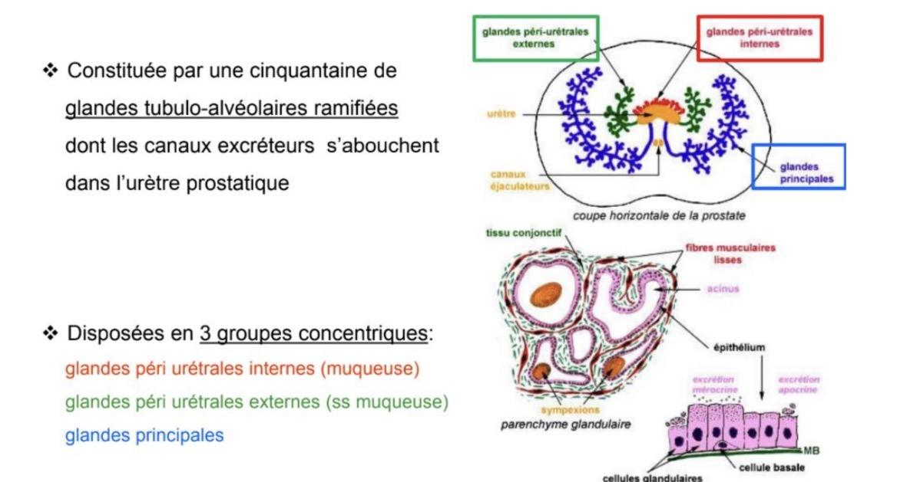
Image histologique — pdf1_p24
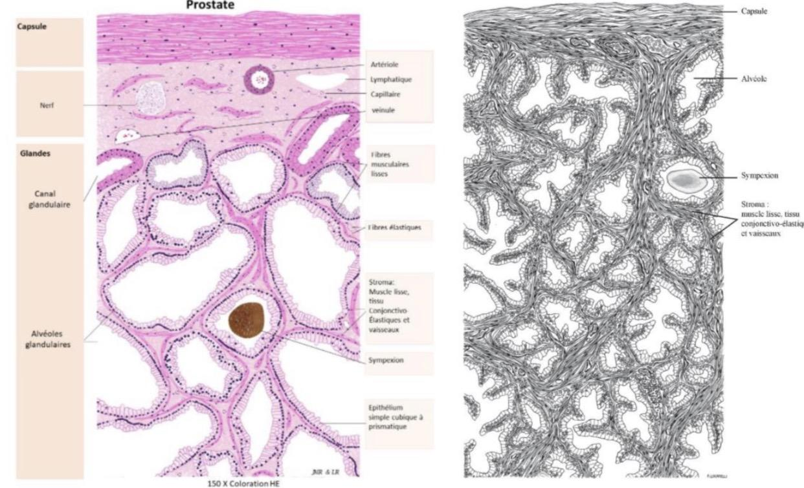
Image histologique — pdf1_p25
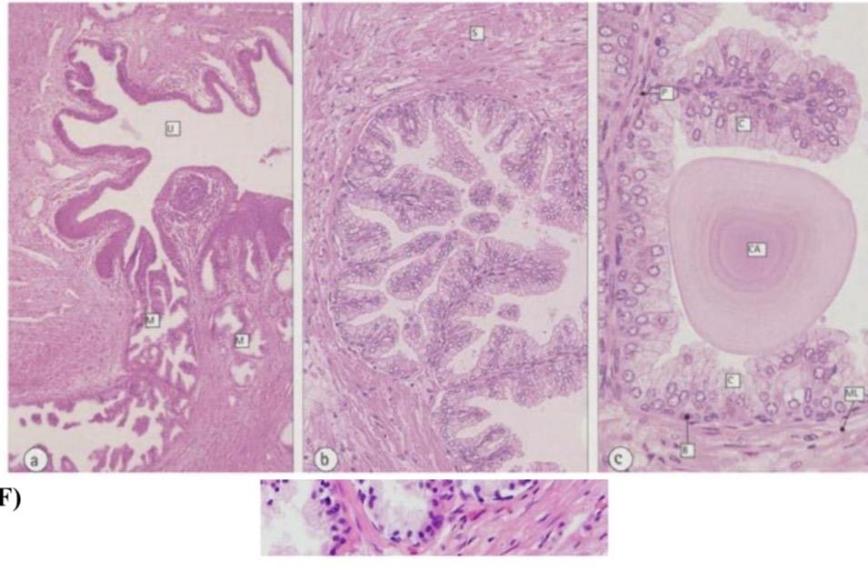
Image histologique — pdf1_p25
Question 1. Quel est le rôle physiologique du PSA dans le sperme ?
Question 2. En histologie prostatique, la sécrétion APOCRINE se caractérise par :
Question 3. Un rapport PSA libre/PSA total de 10% (zone entre 4–10 ng/mL) oriente vers :
Question 4. La haute concentration en zinc dans la prostate normale a pour effet de :
Question 5. Un homme de 58 ans a une prostatite aiguë. Son PSA est à 25 ng/mL. Quelle est la conduite à tenir concernant le PSA ?
La prostate est une glande androgéno-dépendante. Son fonctionnement, sa croissance et ses sécrétions sont régulés par les androgènes, principalement la dihydrotestostérone (DHT).
Les inhibiteurs de la 5α-réductase (finastéride, dutastéride) bloquent la conversion testostérone → DHT, réduisant le volume prostatique de 20–30% (traitement de l'HBP symptomatique et prévention du cancer de prostate chez les sujets à risque). Effet secondaire : réduction du PSA de 50% (biais diagnostique), réduction du volume séminal, troubles érectiles.
| Niveau | Hormone | Effet prostatique |
|---|---|---|
| Leydig | Testostérone (T) → DHT via 5αR2 | Croissance + sécrétion épithéliale |
| Surrénale | DHEA → androstènedione → DHT | Androgènes résiduels sous castration (10–20%) |
| DHT + RA | Complexe DHT-RA → noyau | Transcription des gènes de croissance et sécrétion (PSA, PAP, etc.) |
Le pré-éjaculat (pré-semence ou "liquide pré-éjaculatoire") est la sécrétion des glandes de Cowper. Il s'écoule pendant la phase d'excitation, avant l'éjaculation proprement dite. Ses rôles sont :
IMPORTANT : le pré-éjaculat peut contenir des spermatozoïdes (résiduels d'une éjaculation précédente, ou provenant du canal déférent distale lors de l'excitation). C'est pourquoi la méthode du retrait (coït interrompu) n'est pas fiable contraceptivement. La présence de spermatozoïdes dans le pré-éjaculat est variable selon les individus.
En coupe histologique, les glandes de Cowper présentent :
Elles ressemblent, à faible grossissement, à des glandes salivaires sous-maxillaires. Leur identification histologique n'est pas fréquemment demandée aux ECN mais leur fonction (pré-éjaculat alcalin, lubrification) est importante à connaître.
Image histologique — pdf1_p25
Image histologique — pdf1_p25
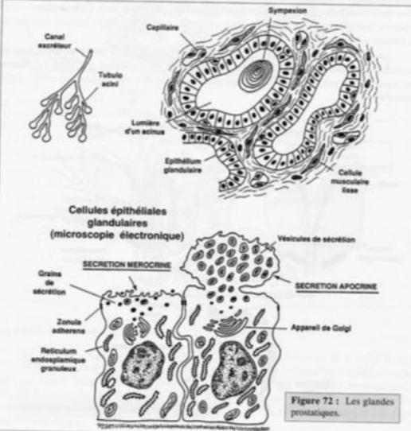
Image histologique — pdf1_p26
Question 1. La DHT (dihydrotestostérone) est formée dans la prostate à partir de la testostérone par l'enzyme :
Question 2. Le pré-éjaculat (liquide pré-éjaculatoire) est sécrété par :
Question 3. Un patient prend du finastéride (inhibiteur 5α-réductase) pour HBP depuis 2 ans. Son PSA total est de 2 ng/mL. Comment interpréter ce PSA ?
Question 4. Histologiquement, les glandes de Cowper ressemblent à :
Question 5. Le dutastéride diffère du finastéride en ce qu'il :
Le sperme (ou éjaculat) est un fluide complexe résultant du mélange des spermatozoïdes avec les sécrétions de toutes les glandes annexes de l'appareil génital masculin. Sa composition est précisément adaptée à la survie des spermatozoïdes, à la traversée du tractus génital féminin, et à la fécondation. Le spermogramme (analyse du sperme) évalue les paramètres spermatiques et biochimiques essentiels à la fertilité masculine.
| Composant | Proportion | Source |
|---|---|---|
| Plasma séminal total | 95–98% du volume | Glandes annexes |
| Spermatozoïdes | 2–5% du volume | Testicules + épididyme |
| Vésicules séminales | 60–70% volume total | Vésicules séminales |
| Sécrétions prostatiques | 25–30% volume total | Prostate |
| Épididyme + Cowper | < 10% volume total | Épididyme, Cowper |
| Paramètre | Valeur de référence OMS 2021 | Pathologie si < seuil |
|---|---|---|
| Volume éjaculat | ≥ 1,4 mL | Hypospermie (ou aspermie si 0) |
| pH | 7,2–8,0 | pH acide → obstruction CE, absence VS |
| Concentration | ≥ 16 millions/mL | Oligozoospermie |
| Nombre total spz | ≥ 39 millions/éjaculat | Oligozoospermie totale |
| Mobilité progressive (PR) | ≥ 30% | Asthénozoospermie |
| Mobilité totale (PR+NP) | ≥ 42% | Asthénozoospermie |
| Vitalité | ≥ 54% vivants | Nécrozoospermie |
| Formes typiques (Kruger strict) | ≥ 4% | Tératozoospermie |
| Leucocytes | < 1 million/mL | Leucospermie (infection ?) |
L'éjaculation est un réflexe médullaire en deux phases :
Si le sperme est recueilli par fractions successives (par masturbation interrompue), on observe que sa composition change au cours de l'éjaculation :
Cette particularité a des implications cliniques : en recueillant la première fraction de l'éjaculat séparément, on obtient une fraction enrichie en spermatozoïdes (utilisé dans certains protocoles d'AMP pour les patients avec très peu de spermatozoïdes).
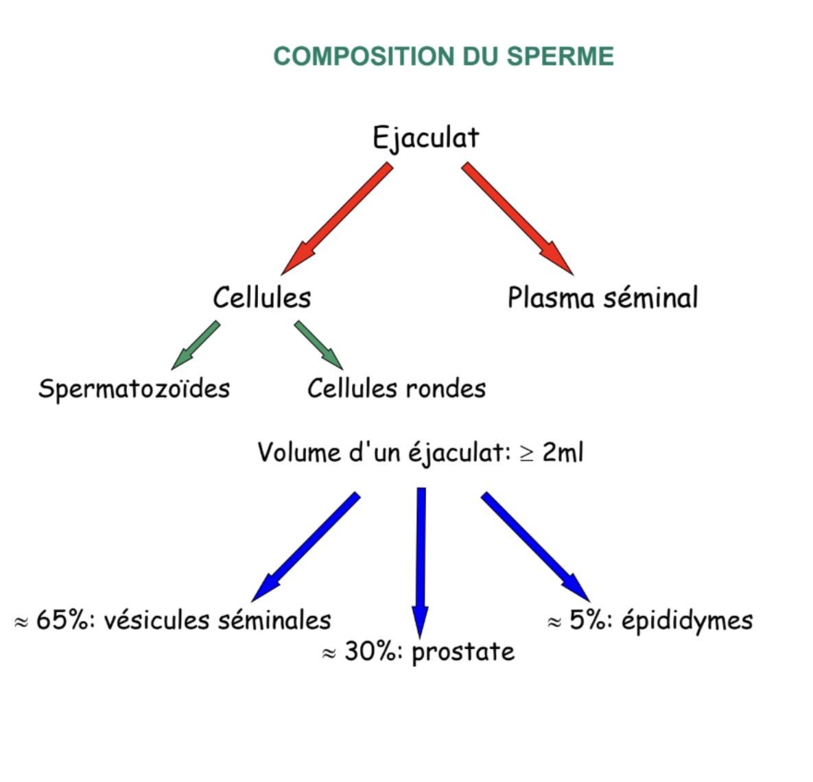
Image histologique — pdf1_p27
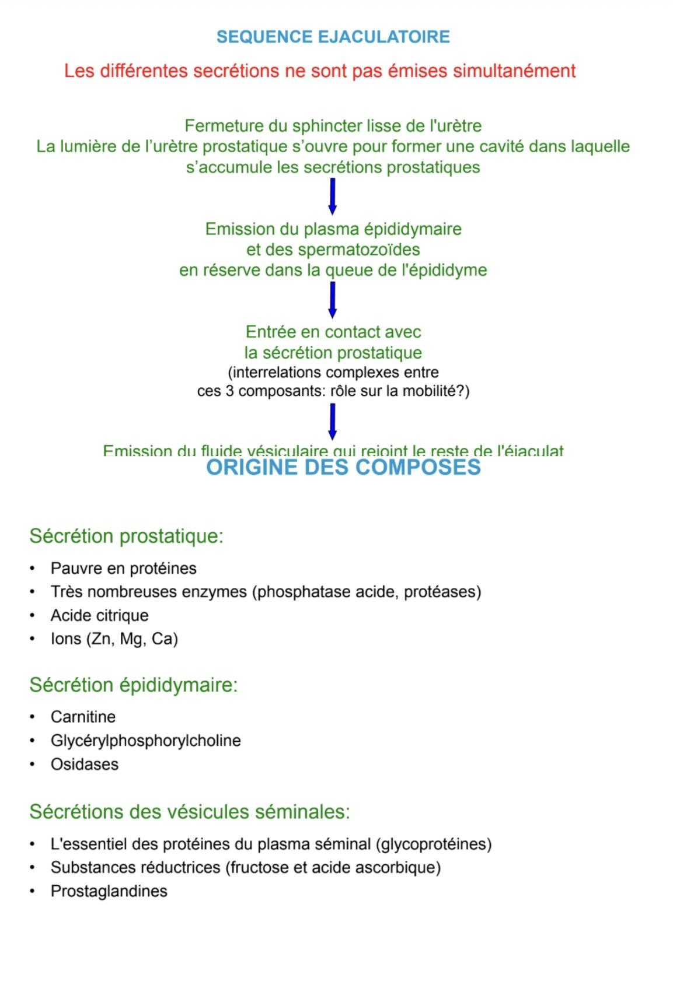
Image histologique — pdf1_p28
Question 1. Selon les recommandations OMS 2021, quelle est la concentration spermatique minimale normale ?
Question 2. La phase d'émission de l'éjaculation est contrôlée par :
Question 3. Dans quelle fraction de l'éjaculat se trouvent la MAJORITÉ des spermatozoïdes ?
Question 4. Un spermogramme montre une concentration de 5 M/mL, 10% de formes progressives, 2% de formes typiques. Comment appeler ce résultat ?
Question 5. La leucospermie (> 1 M leucocytes/mL dans l'éjaculat) doit faire rechercher :
L'andrologie est la branche de la médecine qui s'intéresse à la santé reproductive et sexuelle masculine. Elle couvre la fertilité masculine (spermologie, AMP), la sexualité masculine (érection, éjaculation, désir), les maladies andrologiques (hypogonadisme, varicocèle, cancer du testicule) et les anomalies congénitales ou acquises de l'appareil génital masculin. C'est une discipline à l'interface de l'urologie, de l'endocrinologie, de la gynécologie (pour la fertilité du couple) et de la psychiatrie/sexologie.
La sexualité masculine est un phénomène multidimensionnel intégrant :
Masters et Johnson (1966) ont décrit 4 phases du cycle de la réponse sexuelle :
La réponse sexuelle est sous contrôle à plusieurs niveaux :
| Niveau | Structures | Rôle |
|---|---|---|
| Supraspinal (cortex + limbique) | Cortex orbitofrontal, amygdale, hypothalamus (MPOA) | Désir, fantasmes, inhibition corticale |
| Spinal | Centre parasympathique S2-S4 (érection) | Sympathique L1-L2 (émission) | Somatique S2-S4 (expulsion) | Réflexes sexuels spinaux |
| Périphérique | Nerf caverneux (branche du plexus pelvien) | Nerf honteux | Innervation pénienne |
L'érection est principalement médiée par le parasympathique sacré (S2-S4) via le nerf érecteur (Erigens → nerf caverneux). Les nœuds nerveux pelviens (plexus hypogastrique inférieur) intègrent les signaux sympathique et parasympathique. La chirurgie prostatique (prostatectomie radicale) risque de léser ces nerfs caverneux, d'où la technique "nerve sparing" (préservation des bandelettes neurovasculaires).
Les dysfonctions sexuelles masculines sont fréquentes (30–40% des hommes adultes ont au moins un trouble sexuel à un moment de leur vie) et ont un impact majeur sur la qualité de vie. On distingue :
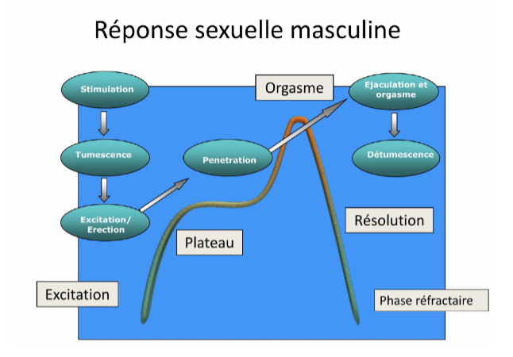
Image — pdf2_p3
Question 1. Quel système nerveux est principalement responsable de l'érection ?
Question 2. Dans le cycle de la réponse sexuelle de Masters et Johnson, lors de la phase de RÉSOLUTION :
Question 3. La prévalence de la dysfonction érectile chez les hommes de 40–70 ans est estimée à environ :
Question 4. Quel est le nerf principal impliqué dans la phase d'EXPULSION de l'éjaculation (contractions des muscles périnéaux) ?
Question 5. Le trouble sexuel masculin le plus fréquent est :
Le DSM-5 (Manuel Diagnostique et Statistique des Troubles Mentaux, 5ème édition) classe les dysfonctions sexuelles masculines en plusieurs catégories. Pour être retenu comme trouble, le symptôme doit :
On distingue plusieurs types :
| Examen | Indication |
|---|---|
| Testostérone totale (matin) | Suspicion hypogonadisme, trouble du désir, DE |
| LH, FSH | Si testostérone basse (différencier hypogonadisme central vs périphérique) |
| Prolactine | Si libido effondrée ou testostérone basse (adénome hypophysaire) |
| Glycémie, HbA1c | Tous les hommes (diabète = 1ère cause organique de DE) |
| Bilan lipidique, HTA | Facteurs de risque cardiovasculaire (DE = marqueur vasculaire) |
| Urine post-éjaculatoire | Si aspermie ou éjaculation faible → chercher spz (éjaculation rétrograde) |
Question 1. Un homme de 42 ans consulte pour DE progressive depuis 2 ans, associée à un ATCD de diabète type 2 et d'HTA sous amlodipine. Les érections matinales sont absentes. Ce tableau est évocateur d'une DE :
Question 2. L'éjaculation rétrograde se caractérise par :
Question 3. Quel médicament est indiqué en 1ère intention dans l'éjaculation précoce primaire ?
Question 4. Pour poser un diagnostic de dysfonction sexuelle selon le DSM-5, la durée minimale des symptômes est :
Question 5. Un homme de 38 ans consulte pour aspermie (pas d'éjaculat). Il est sous tamsulosine pour des symptômes urinaires. Quelle est la cause la plus probable et la conduite à tenir ?
Le pénis est l'organe copulateur masculin. Il est composé de trois structures érectiles :
Histologiquement, les corps caverneux sont constitués de :
Comprendre l'érection nécessite de comprendre le mécanisme veno-occlusif, absolument fondamental :
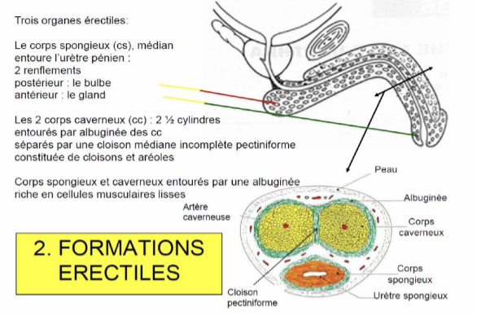
Image — pdf2_p5
En pratique clinique, les corps caverneux sont évalués par :
Question 1. Quel est le mécanisme par lequel le retour veineux est bloqué lors de l'érection (mécanisme veno-occlusif) ?
Question 2. En écho-Doppler pénien après injection d'alprostadil, une vélocité systolique de pointe (PSV) à 18 cm/s (seuil normal ≥ 25 cm/s) indique :
Question 3. La maladie de La Peyronie est causée par :
Question 4. Histologiquement, les sinusoïdes des corps caverneux sont bordés par :
Question 5. Le corps spongieux est moins rigide que les corps caverneux en érection car :
L'érection pénienne est fondamentalement un phénomène vasculaire : elle résulte du remplissage sanguin des sinusoïdes des corps caverneux, consécutif à une vasodilatation artérielle et à un blocage du retour veineux (mécanisme veno-occlusif). Ce mécanisme est déclenché et maintenu par le système nerveux, et régulé par des médiateurs locaux, dont le plus important est l'oxyde nitrique (NO).
Voici la séquence moléculaire complète de l'érection, étape par étape :
Le GMPc est dégradé par la phosphodiestérase de type 5 (PDE5) → inactivation du signal. Les inhibiteurs de la PDE5 (IPDE5) comme le sildénafil (Viagra®), tadalafil (Cialis®), vardénafil (Levitra®) augmentent la durée de vie du GMPc → potentialisent l'érection.
En dehors de l'excitation, les corps caverneux sont en état de flaccidité. Cet état est maintenu par le système orthosympathique :
L'équilibre entre le tonus sympathique (flaccidité) et le signal parasympathique/NO (érection) détermine l'état pénien. Les anxiété et le stress augmentent le tonus sympathique → inhibent l'érection → contribuent à la DE psychogène.
| Médiateur | Source | Effet érectile | Utilisation clinique |
|---|---|---|---|
| Oxyde nitrique (NO) | nNOS (nerveux) + eNOS (endothélium) | Pro-érectile (1er médiateur) | Cible des IPDE5 |
| Prostaglandine E1 (PGE1) | Corps caverneux | Pro-érectile via AMPc | Alprostadil (IIC, MUSE) |
| VIP | Nerfs NANC | Pro-érectile (relaxation) | Papavérine (IIC) |
| Noradrénaline (NA) | Nerfs sympathiques | Anti-érectile (flaccidité) | Phentolamine (alpha-bloquant, IIC) |
| Endothéline-1 | Endothélium caverneux | Anti-érectile (vasoconstriction) | — |
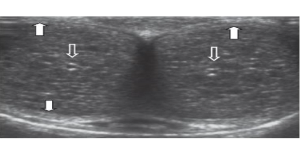
Image — pdf2_p6
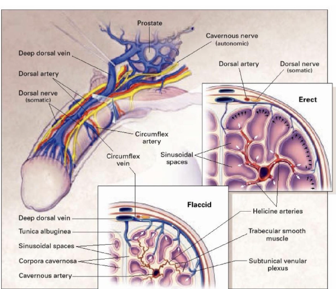
Image — pdf2_p6
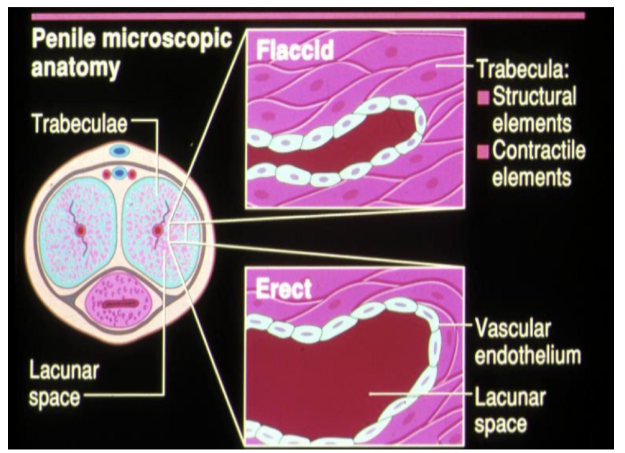
Image — pdf2_p7
Question 1. Quel est le principal second messager intracellulaire de l'érection dans les CML caverneuses ?
Question 2. Association IPDE5 + dérivés nitrés = ?
Question 3. Le priapisme ischémique (bas débit, > 4h) est une urgence car :
Question 4. La noradrénaline (sympathique) maintient la flaccidité pénienne via :
Question 5. Quelle enzyme dégrade le GMPc (inactivant ainsi le signal érectile) ?
La dysfonction érectile (DE) n'est pas un diagnostic final : elle est souvent le symptôme révélateur d'une pathologie sous-jacente (cardiovasculaire, endocrinienne, neurologique). Le bilan doit donc être exhaustif et orienté selon le tableau clinique.
| Examen | Indication | Anomalie → Diagnostic |
|---|---|---|
| Testostérone totale (matin) | Systématique | < 8–10 nmol/L → Hypogonadisme |
| Glycémie à jeun / HbA1c | Systématique | Élevée → Diabète (cause +++) |
| Bilan lipidique | Systématique | Dyslipidémie → Athérosclérose |
| LH + FSH + Prolactine | Si testostérone basse | Prolactine élevée → adénome hypophysaire |
| PSA | Avant traitement T° | Élevé → Cancer prostate (CI T° substitutive) |
| NFS, bilan hépatique | Si polycythémie suspectée | Polyglobulie sous traitement T° |
L'écho-Doppler pénien (triplex) est l'examen de référence pour évaluer la vascularisation des corps caverneux. Il est réalisé après injection intra-caverneuse (IIC) d'un vasoactif (alprostadil 10–20 µg) pour induire une érection pharmacologique.
Paramètres évalués :
L'écho permet aussi de visualiser des plaques de La Peyronie (zones hyperéchogènes de l'albuginée) et des calcifications.
L'IRM pénienne est utilisée pour :
L'IRM n'est pas indiquée en routine pour la DE simple (l'écho-Doppler est suffisant). Elle peut être utile si l'écho est normal et que la DE est inexpliquée (bilan pelvien complet).
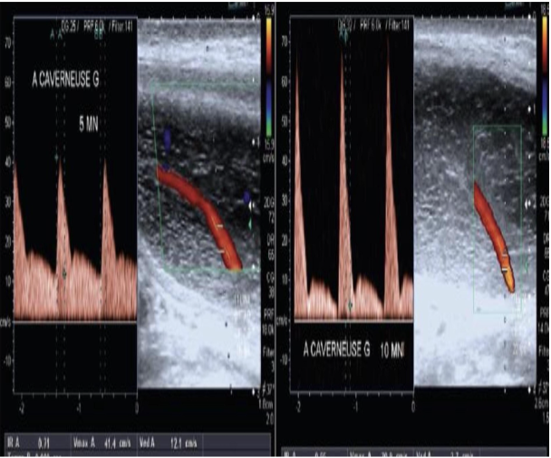
Image — pdf2_p8
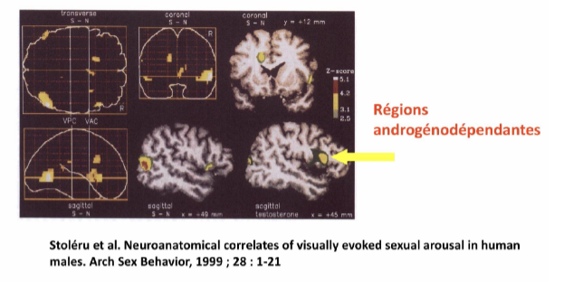
Image — pdf2_p8
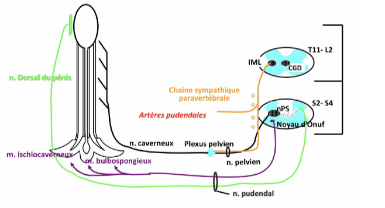
Image — pdf2_p9
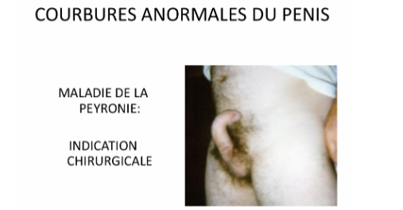
Image — pdf2_p9
Question 1. La DE est considérée comme un "marqueur cardiovasculaire précoce" car :
Question 2. Dans l'escalade thérapeutique de la DE, quelle est la 2ème ligne après échec des IPDE5 ?
Question 3. Le test NPT (Nocturnal Penile Tumescence) est utile pour :
Question 4. Un homme consulte pour DE. Le bilan montre testostérone = 5 nmol/L (basse), LH = 0,5 UI/L (basse), FSH = 0,8 UI/L (basse), prolactine = 85 ng/mL (élevée). Quel est le diagnostic et la prochaine étape ?
Question 5. L'EDVF (End Diastolic Flow Velocity) mesurée en écho-Doppler pénien est supérieure à 7 cm/s (normal ≤ 5 cm/s). Cela indique :
La dysfonction érectile vasculogène partage les mêmes facteurs de risque que l'athérosclérose coronarienne : diabète, HTA, tabagisme, dyslipidémie, sédentarité, obésité. En fait, la DE peut être considérée comme un équivalent de risque coronarien, car les artères péniennes (1–2 mm) sont touchées avant les coronaires (3–4 mm) par les mêmes lésions athéromateuses.
| Cause | Mécanisme | Exemples |
|---|---|---|
| Vasculogène artérielle | Insuffisance artérielle caverneuse | Athérosclérose, HTA, diabète, tabagisme |
| Vasculogène veineuse | Fuite veineuse | Fibrose caverneuse, La Peyronie, priapisme séquellaire |
| Neurogène | Atteinte des nerfs érecteurs | Diabète (neuropathie), sclérose en plaques, prostatectomie radicale, lésion médullaire |
| Hormonale | Manque d'androgènes | Hypogonadisme, hyperprolactinémie, hypoestrogénisme |
| Structurale | Anomalie anatomique | La Peyronie (fibrose albuginée), hypospadias sévère |
| Iatrogène | Médicaments ou chirurgie | Bêtabloquants, antidépresseurs, antiandrogènes, prostatectomie, RTUP |
Les inhibiteurs de la phosphodiestérase de type 5 (IPDE5) sont les médicaments de 1ère ligne de la DE. Ils potentialisent l'érection induite par stimulation sexuelle (ils ne déclenchent pas l'érection seuls).
| Molécule | Délai d'action | Durée | Particularité |
|---|---|---|---|
| Sildénafil (Viagra®) | 30–60 min | 4–6h | Repas gras ↓ absorption ; teinture visuelle bleue (inhibition PDE6 rétinienne) |
| Tadalafil (Cialis®) | 30–60 min | 36h | Longue durée → "week-end pill" ; 5mg/j en continu pour HBP+DE |
| Vardénafil (Levitra®) | 30–60 min | 5–8h | Peu affecté par les repas |
| Avanafil (Spedra®) | 15–30 min | 6h | Action rapide, CI nitrés 12h seulement |
Effets secondaires communs : céphalées, bouffées de chaleur, congestion nasale, myalgies (tadalafil). Contre-indications : dérivés nitrés (CI ABSOLUE), alpha-bloquants à forte dose (risque hypotension orthostatique), insuffisance hépatique sévère, ATCD d'OACR (occlusion artère centrale de la rétine).
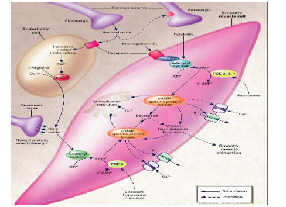
Image — pdf2_p10
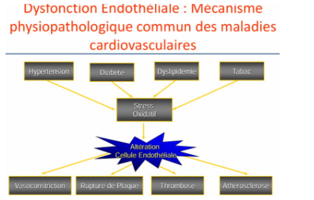
Image — pdf2_p11
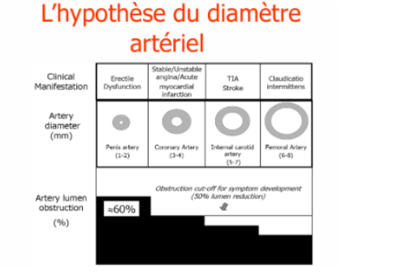
Image — pdf2_p11
Question 1. Parmi les médicaments suivants, lequel peut causer une DE iatrogène ?
Question 2. Un patient de 52 ans prend du tadalafil 10mg pour DE depuis 3 mois. Il développe un angor stable nécessitant un dérivé nitré sublingual. Que faire ?
Question 3. Quelle est la particularité du tadalafil 5mg en prise quotidienne continue ?
Question 4. Parmi les causes suivantes, quelle est la plus fréquente de DE organique chez l'homme de 50 ans ?
Question 5. Une érection spontanée douloureuse de 5 heures survient après une injection intracaverneuse d'alprostadil. Quelle est la prise en charge immédiate ?
L'éjaculation est souvent confondue avec l'orgasme, mais ce sont deux phénomènes distincts. L'orgasme est une sensation subjective de plaisir intense, perçue au niveau cérébral. L'éjaculation est le mécanisme moteur périphérique d'expulsion du sperme. Les deux surviennent simultanément dans la grande majorité des cas, mais peuvent être dissociés dans certaines conditions pathologiques ou pharmacologiques.
Sur le plan évolutif, l'éjaculation est un réflexe hautement adaptatif : il permet le dépôt du sperme dans les voies génitales féminines dans des conditions optimales (volume suffisant, composition adaptée) pour maximiser les chances de fécondation.
L'émission implique la contraction coordonnée de plusieurs structures :
La commande sympathique de l'émission provient du centre spinal d'éjaculation situé dans les segments thoraco-lombaires T10-L2 (centre sympathique thoraco-lombaire). Les fibres préganglionnaires rejoignent les ganglions para-aortiques et mésentériques inférieurs, puis les fibres postganglionnaires innervent les organes cibles via les nerfs hypogastriques.
Le médiateur chimique de l'émission est la noradrénaline, agissant sur des récepteurs alpha-1 adrénergiques des fibres musculaires lisses. C'est pourquoi les alpha-bloquants (tamsulosine, alfuzosine), utilisés pour traiter l'hypertrophie bénigne de la prostate, peuvent provoquer des troubles de l'éjaculation en inhibant cette phase.
L'expulsion résulte de contractions rythmiques à haute fréquence (environ 0,8 secondes d'intervalle) des muscles suivants :
La commande somatique provient du noyau d'Onuf (Onufrowicz), situé dans les cornes antérieures de la moelle sacrée (S2-S4). Les axones moteurs cheminent via le nerf pudendal (nerf honteux interne) pour innervation des muscles du plancher pelvien.
Un mécanisme essentiel pendant l'éjaculation est la fermeture hermétique du col vésical (sphincter lisse interne), qui empêche le reflux rétrograde du sperme vers la vessie.
Cette fermeture est assurée par les récepteurs α1-adrénergiques du sphincter lisse, stimulés par la noradrénaline sympathique. Son efficacité est cruciale : si ce sphincter ne se ferme pas correctement (par exemple sous l'effet d'alpha-bloquants ou après chirurgie prostatique), le sperme reflue vers la vessie → c'est l'éjaculation rétrograde.
Simultanément, le sphincter strié externe (sphincter urétral externe, sous contrôle volontaire et via le nerf pudendal) s'ouvre pour permettre la sortie du sperme. Il y a donc une coordination inverse des deux sphincters : fermeture du lisse + ouverture du strié.
L'éjaculation est coordonnée par un générateur de patron spinal (SPG) localisé dans les segments L3-L4 de la moelle épinière (chez le rat ; probable équivalent chez l'homme). Ce générateur reçoit des afférences sensitives des organes génitaux (via le nerf dorsal du pénis / nerf pudendal) et intègre les signaux pour déclencher le réflexe éjaculatoire.
Les voies supraspinales (noyau paragigantocellulaire du tronc cérébral, aires limbiques, cortex préfrontal) exercent une modulation sur ce générateur spinal. La sérotonine joue un rôle inhibiteur majeur sur l'éjaculation : c'est pourquoi les ISRS (inhibiteurs sélectifs de la recapture de sérotonine) provoquent fréquemment un retard d'éjaculation voire une anéjaculation. Cette propriété est d'ailleurs exploitée thérapeutiquement dans l'éjaculation prématurée (dapoxétine, ISRS à demi-vie courte).
Le sperme est un mélange de sécrétions provenant de plusieurs sources :
| Source | % volume | Composants clés | Rôle |
|---|---|---|---|
| Vésicules séminales | 60–70% | Fructose, prostaglandines, coagulation protéines | Énergie spermatozoïdes, motilité |
| Prostate | 20–30% | PSA, zinc, citrate, phosphatase acide | Liquéfaction, protection anti-infectieuse |
| Épididyme + déférent | ~5% | Spermatozoïdes matures, carnitine, glycérophosphocholine | Fécondation |
| Glandes de Cowper | <5% | Mucus alcalin | Lubrification, neutralisation acidité urétrale |
Le volume normal d'un éjaculat est de 1,5 à 6 mL (OMS 2021 : ≥ 1,4 mL). Un volume inférieur à 1,5 mL est une hypospermie, pouvant indiquer une obstruction des voies séminales, une hypogonadisme ou une éjaculation rétrograde. Un volume supérieur à 6 mL est une hyperspermie, souvent due à une abstinence prolongée ou une inflammation des glandes annexes.
Les différentes fractions de l'éjaculat n'arrivent pas simultanément mais suivent une séquence précise :
Cette séquence a des implications cliniques : en cas d'azoospermie obstructive au niveau du canal éjaculateur, la première fraction (prostatique) peut être normale mais dépourvue de spermatozoïdes. La biochimie du sperme permet de localiser le niveau d'obstruction (voir C23).
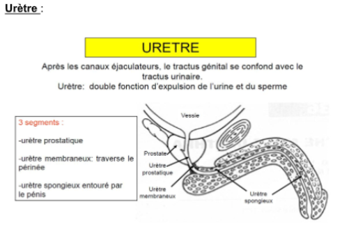
Image histologique — pdf2_p12
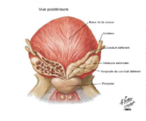
Image histologique — pdf2_p12
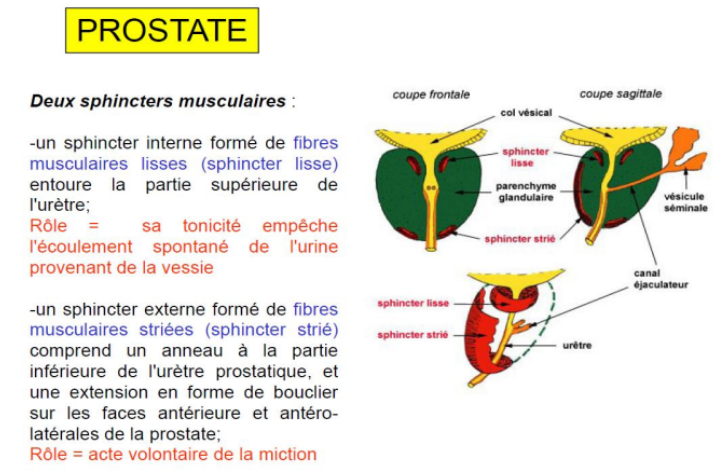
Image histologique — pdf2_p12
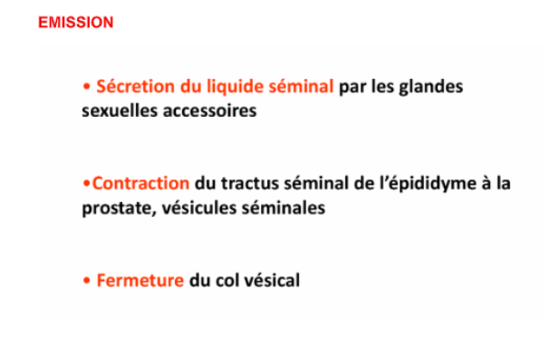
Image histologique — pdf2_p13
Question 1. Quelle structure est principalement responsable de la phase d'émission lors de l'éjaculation ?
Question 2. Quel niveau médullaire correspond au centre spinal de l'expulsion éjaculatoire (muscles striés) ?
Question 3. Concernant le sphincter lisse interne (col vésical) pendant l'éjaculation, quelle affirmation est exacte ?
Question 4. Un homme traité par tamsulosine pour HBP se plaint d'éjaculation "blanche" urinaire. Quel mécanisme explique ce trouble ?
Question 5. Quelle est la proportion approximative du volume éjaculatoire fournie par les vésicules séminales ?
L'éjaculation rétrograde représente une cause importante d'infertilité masculine, puisque le sperme n'atteint pas les voies génitales féminines. Elle représente environ 1,5% des causes d'infertilité masculine. L'homme peut avoir un orgasme normal mais éjacule "à sec" ou avec très peu de liquide (hypospermie sévère voire aspermie clinique).
| Cause | Mécanisme | Exemples |
|---|---|---|
| Médicamenteuse | Blocage α1-adrénergique → sphincter lisse | Alpha-bloquants (tamsulosine, alfuzosine), antipsychotiques (thioridazine, halopéridol) |
| Neurologique | Dénervation sympathique du col vésical | Diabète (neuropathie autonome), sclérose en plaques, lésion médullaire, sympathectomie lombaire |
| Chirurgicale | Lésion anatomique du col vésical | Résection trans-urétrale prostate (RTUP), prostatectomie, chirurgie du col vésical, cystectomie |
| Congénitale | Malformation anatomique | Extrophie vésicale, valve urétrale postérieure traitée |
Le diagnostic est clinique et biologique :
Selon la cause :
Causes d'anéjaculation :
Pour les patients atteints de lésion médullaire, la électroéjaculation par sonde rectale (stimulation électrique trans-rectale du plexus nerveux péri-prostatique) ou la vibromasssage pénien permettent d'induire l'éjaculation pour prélèvement en vue de PMA.
L'analyse biochimique du plasma séminal permet de localiser un obstacle sur les voies séminales. Chaque glande annexe sécrète des marqueurs spécifiques :
| Glande | Marqueur biochimique | Valeur normale | Interprétation si abaissé |
|---|---|---|---|
| Vésicules séminales | Fructose | ≥ 13 µmol/éjaculat | Obstruction canal éjaculateur ou agénésie vésicules séminales |
| Prostate | Zinc / Citrate / PSA | Zinc ≥ 2,4 µmol/éjaculat | Prostatite chronique, obstruction intra-prostatique |
| Épididyme | Alpha-glucosidase neutre / Carnitine libre | Alpha-glucosidase ≥ 20 mU/éjaculat | Obstruction épididymaire (OA épididymaire) |
Algorithme biochimique pour localiser l'obstruction :
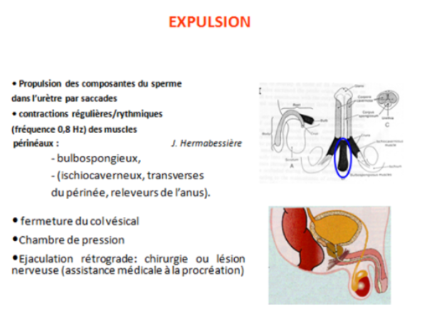
Image histologique — pdf2_p14
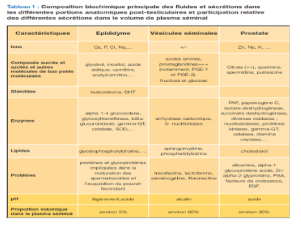
Image histologique — pdf2_p15
Image histologique — pdf2_p15
Question 1. Un homme de 52 ans diabétique se plaint d'orgasme normal sans éjaculat visible. L'analyse des urines post-orgasmiques (alcalinisées) révèle de nombreux spermatozoïdes. Quel est le diagnostic ?
Question 2. Chez un patient avec azoospermie, volume séminal de 0,8 mL, pH acide (6,9) et fructose indétectable, quel est le diagnostic le plus probable ?
Question 3. Concernant l'agénésie bilatérale des canaux déférents (ABCD), quelle association est exacte ?
Question 4. Un homme paraplégique (lésion T6) souhaite être père. L'éjaculation est impossible. Quelle technique peut être utilisée pour recueillir des spermatozoïdes ?
Question 5. Quel marqueur biochimique du sperme permet spécifiquement d'évaluer la fonction épididymaire ?
| Structure | Épithélium | Rôle clé |
|---|---|---|
| Tube séminifère | Ep. stratifié, cell. de Sertoli | Spermatogenèse, BTB, inhibine B |
| Épididyme | Ep. pseudostratifié, stéréocils | Maturation, motilité, stockage spermatozoïdes |
| Canal déférent | Ep. pseudostratifié, 3 couches musc. | Transport rapide lors de l'éjaculation (péristaltisme) |
| Vésicules séminales | Ep. pseudostratifié plissé, sécrétoire | Fructose (énergie spz), 60–70% volume |
| Prostate | Ep. cylindrique, sécrétions mérocrines + apocrines | PSA, zinc, citrate, liquéfaction sperme, 20–30% |
Spermatogonie A → Spermatogonie B → Spermatocyte I (Méiose I) → Spermatocyte II (Méiose II) → Spermatide ronde (spermiogenèse) → Spermatozoïde (64 jours). Contrôle : FSH → Sertoli (ABP, inhibine B), LH → Leydig (testostérone). Barrière hémato-testiculaire (BTB) = jonctions serrées entre cellules de Sertoli.
ORGASME PRÉSENT + PEU/PAS D'ÉJACULAT :
AZOOSPERMIE (volume normal) :
DYSFONCTION ÉRECTILE = symptôme !
⚠️ Marqueur CV : DE = premier symptôme possible d'athérosclérose ! Risque CV augmenté × 1,6 à 2. Artères péniennes plus petites → touchées avant les coronaires (précède l'angor de 3–5 ans).
| Paramètre | Seuil minimal (5e percentile) |
|---|---|
| Volume | ≥ 1,4 mL |
| Concentration | ≥ 16 × 10⁶/mL |
| Nombre total | ≥ 39 × 10⁶/éjaculat |
| Mobilité progressive (PR) | ≥ 30% |
| Morphologie normale (Kruger) | ≥ 4% |
| Vitalité | ≥ 54% vivants |